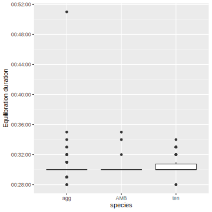
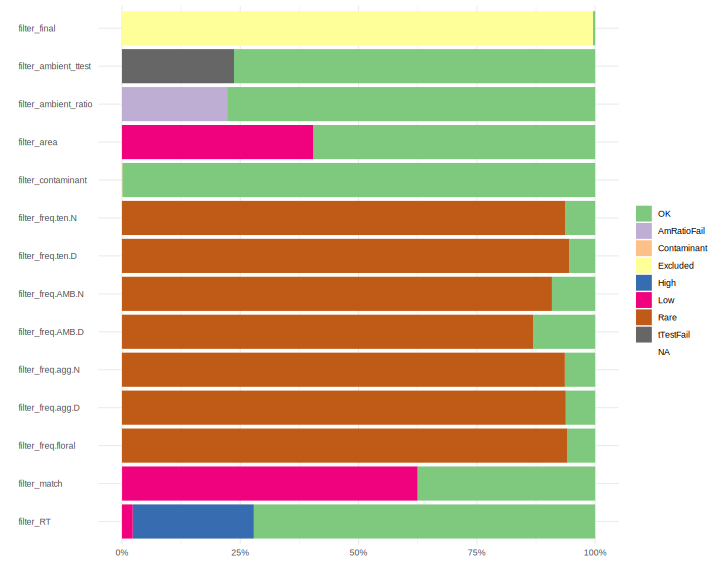
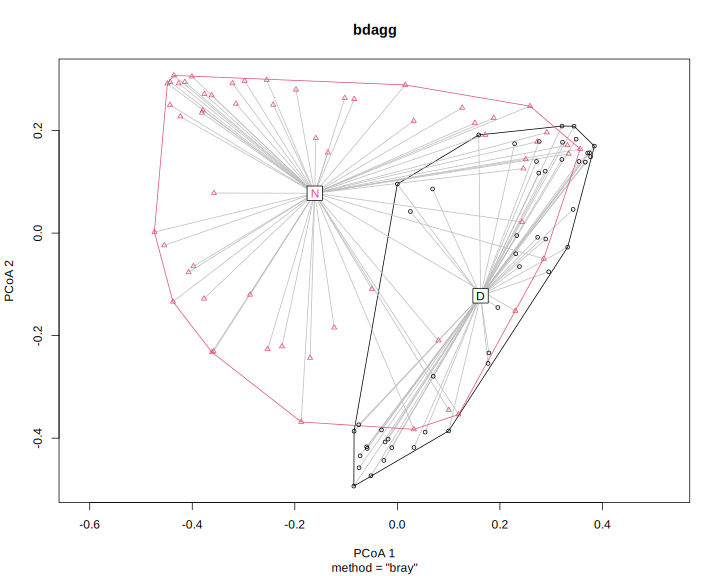
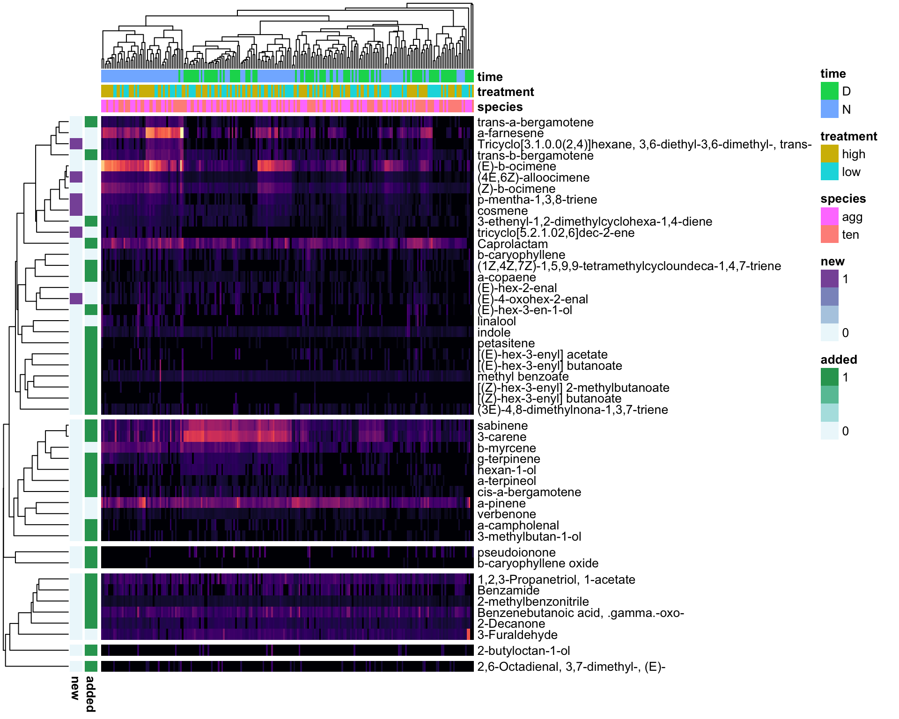
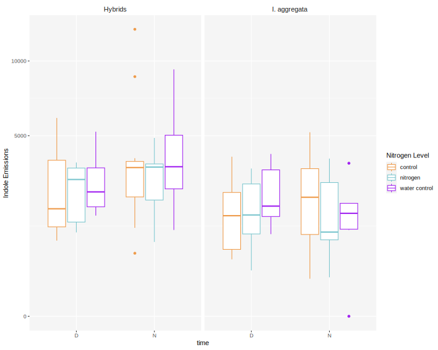

Ipomopsis nitrogen experiment 1 volatiles
Janelle Bohey, John Powers
2023-11-30
This has correct quant integrations and full compound list Speciestime & treatment grouping instead of species, time, treatment 34 compounds with quantitative integrations
=======
setwd("~/Desktop/ipomopsis-nitrogen") #set working directory
library(googlesheets4) #need for read_sheets
exp1_meta <- read_sheet("1k2XJUsRyTsQEeEoZE24yTvsl7kSyf2Gg6gehs8pUvOo", sheet="metadata", guess_max=200) %>% #sheet selects "metadata" sheet on Google Sheets, guess_max reads 200 lines before program guesses the type of each column (string vs integer vs date)
mutate(plant = as.character(plant))
exp2leaf_meta <- read_sheet("1EwPMsBAxqrRtuqH4uUBtthUOZlQluQICSvNr9u87h0E", sheet="metadata", guess_max=200) %>%
mutate(plant = as.character(plant))
exp1_field_nofilename <- read_csv("data/2022 Poverty Gulch Volatiles.csv") %>%
mutate(plant = as.character(plant),
Sample=paste0(plant, ifelse(is.na(replicate),"", replicate)),
type= factor(ifelse(str_detect(Sample, "AIR"), "ambient", "floral")), date=ymd(date),
treatment=fct_recode(replace_na(treatment, "air"),control="ambient"),
equil=pump-bag, pumping=end-pump)
exp1_field_link <-read_csv("data/AA_samples6.csv") %>% #links filename and metadata
mutate(date=ymd(date)) #these FileNames have already been corrected for skips
exp1_field_meta <- left_join(exp1_field_link, exp1_field_nofilename)
#trying to figure out mismatch in filemane and metadata bc there are NAs
filter(exp1_field_meta, is.na(type)) %>% pull(Filename)[1] "Ihyb_T10_D_220712_822022_10.qgd" "Ihyb_NOIDJP_D_220712_822022_09.qgd"
[3] "Ihyb_530_D_220712_822022_14.qgd" "Ihyb_84aT9_N_220711_842022_09.qgd"
[5] "Blank1_7262022_01.qgd" "Lagg_AIRJP2_N_220721_7282022_19.qgd"
[7] "Ihyb_T27__220722_7282022_27.qgd" # filters to list only filenames with NAs
filter(exp1_field_link, !Filename %in% exp1_field_meta$Filename) %>% pull(Filename)character(0)#setdiff finds differences in dataframes to identify missing samples
setdiff(exp1_field_link$Filename, drop_na(exp1_field_meta, type)$Filename) [1] "Ihyb_T10_D_220712_822022_10.qgd" "Ihyb_NOIDJP_D_220712_822022_09.qgd"
[3] "Ihyb_530_D_220712_822022_14.qgd" "Ihyb_84aT9_N_220711_842022_09.qgd"
[5] "Blank1_7262022_01.qgd" "Lagg_AIRJP2_N_220721_7282022_19.qgd"
[7] "Ihyb_T27__220722_7282022_27.qgd" #setdiff shows the difference between links and meta,
#trying to find if there are filenames and metadata that don't match up but we didn't find any
setdiff(drop_na(exp1_field_meta, type)$Filename, exp1_field_link$Filename)character(0)#dropping filenames with no metadata; remove later
exp1_field_meta <- drop_na(exp1_field_meta, type)
gc_verdicts <- read_sheet("1X8oo7qZlo1p6MVl_CBeBe6CUTHEAcd-FWQzfHud3Qws", sheet = "2022gc220929") %>% #verdicts = the truth of the skips, renames all skips in R
mutate(sample2 = ifelse(is.na(sample), FileName, sample))
#verdicts
exp1_verdicts <- gc_verdicts %>% filter(sample2 %in% exp1_meta$filename) #sample2= if sample is blank on metadata then its the filename no renaming necessary but if sample has a filename then something before it skipped and your re lining up/ accounting for skip (translating between the filename you want and the filename you have)
exp2leaf_verdicts <- gc_verdicts %>% filter(sample2 %in% exp2leaf_meta$filename)
#New meta matching file name in meta with sample file name on GC
exp1_field_verdicts <- gc_verdicts %>% filter(FileName %in% exp1_field_meta$Filename)
#exp1_field_verd_merged <- left_join(exp1_field_verdicts, exp1_field_meta)#merge by FileName
write_csv(exp1_verdicts, file = "data/exp1_verdicts.csv")
write_csv(exp2leaf_verdicts, file = "data/exp2leaf_verdicts.csv")
write_csv(exp1_field_verdicts, file = "data/exp1_field_verdicts.csv")
load("data/shimadzu_data_22.rda") #loading qualitative integrations all of them from 2022
#exp1.data = greenhouse N experiment data only
#pg.data= field N experiment at Poverty Gulch data only
exp1.data <- shimadzu.data.22 %>% filter(Filename %in% exp1_verdicts$FileName) #
#exp2leaf.data <- shimadzu.data.22 %>% filter(Filename %in% exp2_verdicts$FileName)
exp1.field.data <- shimadzu.data.22 %>% filter(Filename %in% exp1_field_verdicts$FileName)
save(exp1.data, file = "data/exp1_data.rda")
#save(exp2leaf.data, file = "data/exp2leaf_data.rda")
save(exp1.field.data, file = "data/exp1_field_data.rda")
exp1.verdicts <- read_csv("data/exp1_verdicts.csv")
load("data/exp1_data.rda") #loads exp1.data (Shimadzu output)
exp1.data <- exp1.data %>% left_join(select(exp1.verdicts, Filename = FileName, sample2)) %>%
select(-Filename) %>% rename(Filename = sample2) %>% #replace FileName with the sample2 it holds (accounts for skips)
droplevels()
exp1.field.verdicts <- read_csv("data/exp1_field_verdicts.csv")
load("data/exp1_field_data.rda") #loads exp1.field.data (Shimadzu output)
exp1.field.data <- exp1.field.data %>% left_join(select(exp1.field.verdicts, Filename = FileName, sample2)) %>%
select(-Filename) %>% rename(Filename = sample2) %>% #replace FileName with the sample2 it holds (accounts for skips)
droplevels()
# load short names
ipochems <- read_csv("data/Ipo volatile compounds - chemsf_ipo.csv") %>%
select(name, shortname, standard, verdict) %>% filter(verdict != "")
#shorten chemical names and merge compounds with multiple names
shortnames <- ipochems %>% select(name, shortname) %>% filter(shortname!="") %>% deframe()
exp1.data$Name <- recode(exp1.data$Name, !!!shortnames)
exp1.field.data$Name <- recode(exp1.field.data$Name, !!!shortnames)
exp1.all <- dcast(exp1.data, Filename~Name, sum, value.var="Area") #all means all VOCs unfiltered
rownames(exp1.all) <- exp1.all[,1]
exp1.all[,1] <- NULL
exp1.field.all <- dcast(exp1.field.data, Filename~Name, sum, value.var="Area")
rownames(exp1.field.all) <- exp1.field.all[,1]
exp1.field.all[,1] <- NULLRead metadata for Weatherport experiment
metadata <- read_csv("data/EXP 1 (N) Volatile sampling - metadata.csv") %>%
filter(filename != "#N/A") %>%
mutate(plantid = paste(species, plant), speciestime = paste(species, time, sep=".")) %>%
left_join(read_csv("data/exp1_treatments.csv") %>% mutate(plant = as.character(plant)))
rownames(metadata) <- metadata$filename
metadata <- metadata[rownames(exp1.all),] #order metadata to match order of data (which already. corrected for skips above in exp1.all)
metadata %>% count(species, time, treatment) %>% kable()| species | time | treatment | n |
|---|---|---|---|
| AMB | D | NA | 5 |
| AMB | N | NA | 10 |
| agg | D | high | 24 |
| agg | D | low | 24 |
| agg | N | high | 32 |
| agg | N | low | 28 |
| ten | D | high | 27 |
| ten | D | low | 20 |
| ten | N | high | 31 |
| ten | N | low | 32 |
metadata %>% filter(species !="AMB") %>% count(species, plantid, time) %>%
ggplot(aes(x=n, fill=time))+ geom_histogram(binwidth=1) + facet_wrap(vars(time), ncol=1)+
labs(x="Samples per plant") 
metadata %>% filter(species !="AMB") %>% group_by(time) %>%
mutate(pump.dt = ymd_hms(paste(date, pump)), pump.hr = hour(pump.dt)+minute(pump.dt)/60,
bag.dt = ymd_hms(paste(date, bag)), bag.hr = hour(bag.dt)+minute(bag.dt)/60,
end.dt = ymd_hms(paste(date, bag)), end.hr = hour(end.dt)+minute(end.dt)/60) %>%
summarize(min=min(bag.hr), max=max(end.hr)) %>% kable(caption="first bag time, last ending time, in hr", digits=2)| time | min | max |
|---|---|---|
| D | 9.08 | 14.72 |
| N | 19.93 | 21.80 |
ggplot(metadata, aes(y=equil, x=species)) + geom_boxplot() + labs(y="Equilibration duration")
ggplot(metadata, aes(y=pumping, x=species)) + geom_boxplot() + labs(y="Pumping duration")
metadata %>% count(species) %>% kable(caption="total volatile samples by species")| species | n |
|---|---|
| AMB | 15 |
| agg | 108 |
| ten | 110 |
digging_date <- ymd("2022-06-24")
treatment_date <- digging_date + days(6)
ggplot(metadata, aes(x=date-treatment_date, fill=species))+geom_histogram(binwidth=1)
metadata %>% count(date-treatment_date) %>% kable(caption=paste("days since treatments began on", treatment_date))| date - treatment_date | n |
|---|---|
| 20 days | 50 |
| 25 days | 111 |
| 35 days | 41 |
| 36 days | 22 |
| 42 days | 7 |
| 48 days | 2 |
Read Arturo’s field metadata
metadata.field <- exp1_field_meta %>% #Filename already accounted for skips
rename(time=d_n, species=site, sample2=Filename) %>% #to do the join
mutate(plantid = paste(species, plant),
speciestime = paste(species, time, sep="."),
plant = as.character(plant)) %>%
mutate(treatmentx2=fct_recode(treatment, control="water control")) %>% #combine water control and control
left_join(exp1.field.verdicts) %>% rename(filename=sample2) %>%
drop_na(filename) %>% #TODO need to rescue some of these rows that might be good?
mutate(type=replace_na(type,"floral"))
rownames(metadata.field) <- metadata.field$filename #adds row names (makes row name the filename)
metadata.field <- metadata.field[rownames(exp1.field.all),] #order metadata to match order of shimadzu data
MnD <- setdiff(metadata.field$filename, rownames(exp1.field.all)) #dropping differences between metadata.field and exp1.field.all. MnD= in metadata but not in data
DnM <- setdiff(rownames(exp1.field.all), metadata.field$filename) #DnM= in data but not in metadata
metadata.field <- filter(metadata.field, !filename %in% MnD) #drops filenames that are in metadata but not in data
exp1.field.all <- filter(exp1.field.all, !rownames(exp1.field.all) %in% DnM)
exp1.field.data <- filter(exp1.field.data, !exp1.field.data$Filename %in% DnM)
metadata.field %>% count(species, time, treatment) %>% kable() #TODO change the treatment names to make more sense| species | time | treatment | n |
|---|---|---|---|
| Ihyb | D | air | 5 |
| Ihyb | D | control | 7 |
| Ihyb | D | nitrogen | 16 |
| Ihyb | D | water control | 8 |
| Ihyb | N | air | 7 |
| Ihyb | N | control | 26 |
| Ihyb | N | nitrogen | 30 |
| Ihyb | N | water control | 29 |
| Lagg | D | air | 3 |
| Lagg | D | control | 23 |
| Lagg | D | nitrogen | 7 |
| Lagg | D | water control | 9 |
| Lagg | N | air | 5 |
| Lagg | N | control | 24 |
| Lagg | N | nitrogen | 7 |
| Lagg | N | water control | 7 |
metadata.field %>% drop_na(species) %>% count(species, plantid, time) %>%
ggplot(aes(x=n, fill=time))+ geom_histogram(binwidth=1) + facet_wrap(vars(time), ncol=1)+
labs(x="Samples per plant") #figure out type==NA
# metadata.field %>% filter(type=="floral") %>% group_by(time) %>%
# mutate(pump.dt = ymd_hms(paste(date, pump)), pump.hr = hour(pump.dt)+minute(pump.dt)/60,
# bag.dt = ymd_hms(paste(date, bag)), bag.hr = hour(bag.dt)+minute(bag.dt)/60,
# end.dt = ymd_hms(paste(date, bag)), end.hr = hour(end.dt)+minute(end.dt)/60) %>%
# summarize(min=min(bag.hr), max=max(end.hr)) %>% kable(caption="first bag time, last ending time, in hr", digits=2)
#ggplot(metadata.field, aes(y=equil, x=species)) + geom_boxplot() + labs(y="Equilibration duration")
#ggplot(metadata.field, aes(y=pumping, x=species)) + geom_boxplot() + labs(y="Pumping duration")
metadata.field %>% count(species) %>% kable(caption="total volatile samples by species")| species | n |
|---|---|
| Ihyb | 128 |
| Lagg | 85 |
treatment_date <- ymd("2022-06-24")#this is not the right date
#start N addition date: june 21st for agg; june 28th for ihyb site
#end date: July 19th for agg; july 26th for ihyb
ggplot(metadata.field, aes(x=date-treatment_date, fill=species))+geom_histogram(binwidth=1)metadata.field %>% count(date-treatment_date) %>% kable(caption=paste("days since treatments began on", treatment_date))| date - treatment_date | n |
|---|---|
| 17 days | 36 |
| 18 days | 24 |
| 27 days | 85 |
| 33 days | 56 |
| 34 days | 12 |
Filtering Exp1 Greenhouse
metadata <- metadata %>% mutate(type= ifelse(species=="AMB", "ambient","floral")) %>% rename(trap=sample) %>% as.data.frame() %>%
load_metadata(date = "date", sample = "filename", group = "speciestime", type = "type") #combine species and time (previously separate)
longdata <- load_longdata(exp1.data, sample = "Filename", RT = "Ret.Time",
name = "Name", area = "Area", match = "SI", maxmatch=100)
sampletable <- make_sampletable(longdata, metadata)
chemtable <- make_chemtable(longdata, metadata) %>%
filter_RT(2, 17) %>%
filter_match(0.8) %>%
filter_freq(0.2, group = TRUE) %>%
filter_contaminant(cont.list = c("13-Methyltetradecanal","Cyclohexane, 1,1-dimethyl-2-propyl-","2-hexyldecan-1-ol","Tridecane, 3-methylene-")) %>%
filter_area(min_maximum = 1e5) %>%
filter_ambient_ratio(sampletable, metadata, ratio = 3) %>%
filter_ambient_ttest(sampletable, metadata,
alpha = 0.05, adjust = "fdr")
chemtable$filter_final <- with(chemtable, filter_RT == "OK" & filter_match =="OK" &
(filter_freq.agg.N == "OK" | filter_freq.ten.N == "OK" |
filter_freq.agg.D == "OK" | filter_freq.ten.D == "OK") &
filter_area == "OK" & filter_ambient_ratio == "OK" &
filter_ambient_ttest == "OK" & filter_contaminant == "OK")
plot_filters(chemtable, option="rarity")
plot_filters(chemtable, option="ambient")plot_filters(chemtable, option="volcano")
plot_filters(chemtable, option="prop")
vol.qual <- prune_sampletable(sampletable, chemtable, metadata)
files_exclude <- c("NEXP1_agg6n3_N_220725_8152022_10.qgd") # flower fell off
vol.qual <- vol.qual[!(rownames(vol.qual) %in% files_exclude) ,]
meta <- metadata[metadata$type == "floral" & !(metadata$sample %in% files_exclude),] %>% droplevels()
vol.qual <- vol.qual / (as.numeric(meta$equil + meta$pumping)/3600) / meta$flrs #0.5 hr of equilibration plus 0.25 hr pumping, one flowerFiltering Exp1 Field
#need to get rid of NA values in metadata.field for code below to run
#group= speciestime, should we do the same for arturo's data? need to make new column if yes
metadata.field <- metadata.field %>% as.data.frame() %>%
load_metadata(date = "date", sample = "filename", group = "speciestime", type = "type") #combine species and time (previously separate)
longdata.field <- load_longdata(exp1.field.data, sample = "Filename", RT = "Ret.Time",
name = "Name", area = "Area", match = "SI", maxmatch=100) %>%
filter(name !="") %>% mutate(name = droplevels(name))
setdiff(as.character(metadata.field$sample), longdata.field$sample)character(0)setdiff(longdata.field$sample, as.character(metadata.field$sample))character(0)sampletable.field <- make_sampletable(longdata.field, metadata.field)
chemtable.field <- make_chemtable(longdata.field, metadata.field) %>%
filter_RT(2, 17) %>%
filter_match(0.8) %>%
filter_freq(0.2, group = TRUE) %>%
filter_contaminant(cont.list = c("Caprolactam")) %>%
filter_area(min_maximum = 1e5) %>%
filter_ambient_ratio(sampletable.field, metadata.field, ratio = 3) %>%
filter_ambient_ttest(sampletable.field, metadata.field,
alpha = 0.05, adjust = "fdr")
chemtable.field$filter_final <- with(chemtable.field, filter_RT == "OK" & filter_match =="OK" &
(filter_freq.Lagg.N == "OK" | filter_freq.Ihyb.N == "OK" |
filter_freq.Lagg.D == "OK" | filter_freq.Ihyb.D == "OK") &
filter_area == "OK" & filter_ambient_ratio == "OK" &
filter_ambient_ttest == "OK" & filter_contaminant == "OK")
plot_filters(chemtable.field, option="rarity")plot_filters(chemtable.field, option="ambient")plot_filters(chemtable.field, option="volcano")plot_filters(chemtable.field, option="prop")vol.qual.field <- prune_sampletable(sampletable.field, chemtable.field, metadata.field)
files_exclude <- c("")
vol.qual.field <- vol.qual.field[!(rownames(vol.qual.field) %in% files_exclude) ,]
meta.field <- metadata.field[metadata.field$type == "floral" & !(metadata.field$sample %in% files_exclude),-48] %>%#48 is the second sample colum (skips)
droplevels() %>% mutate(species=factor(species), time=factor(time))
vol.qual.field <- vol.qual.field / (as.numeric(meta.field$equil + meta.field$pumping)/3600) / meta.field$flowers #0.5 hr of equilibration plus 0.25 hr pumping, one flowerCompare field and weatherport filtering
print("both datasets:")[1] "both datasets:"intersect(colnames(vol.qual), colnames(vol.qual.field)) [1] "b-myrcene"
[2] "(E)-b-ocimene"
[3] "a-pinene"
[4] "(E)-hex-2-enal"
[5] "(4E,6Z)-alloocimene"
[6] "cosmene"
[7] "verbenone"
[8] "b-caryophyllene"
[9] "carveol"
[10] "(Z)-b-ocimene"
[11] "a-farnesene"
[12] "Tricyclo[3.1.0.0(2,4)]hexane, 3,6-diethyl-3,6-dimethyl-, trans-"print("weatherport, not field:")[1] "weatherport, not field:"setdiff(colnames(vol.qual), colnames(vol.qual.field))[1] "(E)-4-oxohex-2-enal" "Benzyl isopentyl ether"
[3] "linalool" "1-Decanol, 2-hexyl-"
[5] "p-mentha-1,3,8-triene" "Farnesol"
[7] "3-Furaldehyde" "tricyclo[5.2.1.02,6]dec-2-ene"print("field, not weatherport:")[1] "field, not weatherport:"setdiff(colnames(vol.qual.field), colnames(vol.qual)) [1] "(3E)-4,8-dimethylnona-1,3,7-triene"
[2] "2-Decanone"
[3] "3-Hexen-1-ol"
[4] "D-limonene"
[5] "a-terpineol"
[6] "(3E,5E)-2,6-dimethylocta-3,5,7-trien-2-ol"
[7] "3-ethenyl-1,2-dimethylcyclohexa-1,4-diene"
[8] "Benzenebutanoic acid, .gamma.-oxo-"
[9] "Benzoic acid, ethyl ester"
[10] "(E)-hex-3-en-1-ol"
[11] "2,6-Octadienal, 3,7-dimethyl-, (E)-" Quantitative integrations greenhouse & field
#read in the large 2022 quant integration output and cut it down to NEXP chromatograms
source("read_shimadzu.R") #loads the function that reads the shimadzu output text file
# quantpath <- "~/MyDocs/MEGA/UCI/Schiedea/Analysis/scent/rmbl/RMBL Batches/quant_round3/"
# bfiles <- list.files(quantpath)
# quant.full <- map_dfr(set_names(paste0(quantpath, bfiles), bfiles), read.shimadzu.quant, .id="batch") %>%
quant.full <- read.shimadzu.quant("data/quant_Ipo2022part1_5.txt") %>% #reads in shimadzu text file with quant integrations
mutate(Name = trimws(Name), Area=replace_na(Area, 0)) %>%
distinct(Filename, Name, .keep_all=T)
quant.full %>% select(Dirname, Filename, Name, Area) %>%
mutate(Dirname = fct_relabel(Dirname, str_remove, "C:/GCMSsolution/Data/Project1_190815/")) %>%
filter(Name != "1,6,10-Dodecatrien-3-ol, 3,7,11-trimethyl-") %>% #John- why??
mutate(Name = recode(Name, !!!shortnames)) %>%
#filter(str_detect(Filename, "^NEXP")) %>%
select(-Dirname) %>%
pivot_wider(names_from="Name", values_from="Area") %>%
write_tsv("data/quant_2022_exp1_exp1field.tsv")
vol.exp1.exp1field <- read_tsv("data/quant_2022_exp1_exp1field.tsv")
#weatherport quant
vol <- vol.exp1.exp1field %>% #takes origional file names and left joins it with verdicts
left_join(select(exp1.verdicts, Filename = FileName, sample2)) %>% drop_na(sample2) %>% #grabs two columns from verdicts - Filename (which is the origional filename on hard drive) and sample2 (which is the sample that is in that file name)
select(-Filename) %>% rename(Filename = sample2) %>% #replace FileName with the sample2 it holds (accounts for skips)
column_to_rownames("Filename")
contams <- c("methyl salicylate", "benzaldehyde","trans-Geranylgeraniol","Decanal", "D-limonene", "Nonanoic acid", "caprolactam",
"(2E)-2,7-dimethylocta-2,6-dien-1-ol", #same peak as b-myrcene
"3-methylbutanal oxime")#passed bouquet in OTC experiment but rare here
vol <- vol[rownames(vol.qual), !colnames(vol) %in% contams] # reorders rows to match vol.qual and removes contaminates
vol <- vol / (as.numeric(meta$equil + meta$pumping)/3600) / meta$flrs #0.5 hr of equilibration plus 0.25 hr pumping, one flower
#field quant
vol.field <- vol.exp1.exp1field %>% #takes origional file names and left joins it with verdicts
left_join(select(exp1.field.verdicts, Filename = FileName, sample2)) %>% drop_na(sample2) %>% #grabs two columns from verdicts - Filename (which is the origional filename on hard drive) and sample2 (which is the sample that is in that file name)
select(-Filename) %>% rename(Filename = sample2) %>% #replace FileName with the sample2 it holds (accounts for skips)
column_to_rownames("Filename")
vol.field <- vol.field[rownames(vol.qual.field), !colnames(vol.field) %in% contams] # reorders rows to match vol.qual and removes contaminates
vol.field <- vol.field / (as.numeric(meta.field$equil + meta.field$pumping)/3600) / meta.field$flowers #0.5 hr of equilibration plus 0.25 hr pumping, one flower
#compare lists
(added_quant <- setdiff(colnames(vol), colnames(vol.qual)))#in quant (from temp experiment) but do not pass filters in this dataset [1] "g-terpinene"
[2] "methyl benzoate"
[3] "(3E)-4,8-dimethylnona-1,3,7-triene"
[4] "2-methylbenzonitrile"
[5] "a-campholenal"
[6] "Caprolactam"
[7] "indole"
[8] "a-copaene"
[9] "petasitene"
[10] "trans-a-bergamotene"
[11] "trans-b-bergamotene"
[12] "pseudoionone"
[13] "(E)-hex-3-en-1-ol"
[14] "[(E)-hex-3-enyl] acetate"
[15] "[(E)-hex-3-enyl] butanoate"
[16] "[(Z)-hex-3-enyl] butanoate"
[17] "a-terpineol"
[18] "cis-a-bergamotene"
[19] "(1Z,4Z,7Z)-1,5,9,9-tetramethylcycloundeca-1,4,7-triene"
[20] "sabinene"
[21] "3-carene"
[22] "b-caryophyllene oxide"
[23] "[(Z)-hex-3-enyl] 2-methylbutanoate"
[24] "2-butyloctan-1-ol"
[25] "hexan-1-ol"
[26] "3-methylbutan-1-ol"
[27] "3-ethenyl-1,2-dimethylcyclohexa-1,4-diene"
[28] "2-Decanone"
[29] "2,6-Octadienal, 3,7-dimethyl-, (E)-"
[30] "1,2,3-Propanetriol, 1-acetate"
[31] "Benzamide"
[32] "Benzenebutanoic acid, .gamma.-oxo-" (new_quant <- colnames(vol)[28:33]) #newly integrated, pass filters[1] "(E)-4-oxohex-2-enal"
[2] "p-mentha-1,3,8-triene"
[3] "tricyclo[5.2.1.02,6]dec-2-ene"
[4] "cosmene"
[5] "(4E,6Z)-alloocimene"
[6] "Tricyclo[3.1.0.0(2,4)]hexane, 3,6-diethyl-3,6-dimethyl-, trans-"(need_quant <- setdiff(colnames(vol.qual), colnames(vol))) # filtered volatiles that need quant integration. [1] "Benzyl isopentyl ether" "carveol" "1-Decanol, 2-hexyl-"
[4] "Farnesol" #vol <- bind_cols(vol, vol.qual[,need_quant]) #temporary, add a couple volatiles that don't have quant integrations yet (currently not on same scale!)Find out how much variation there is between samples from same plant
bd <- betadisper(vegdist(vol), meta$plantid) #gives bray curtis distance
plot(bd)bdday <- betadisper(vegdist(vol[meta$time=="D",]), meta$plantid[meta$time=="D"])
plot(bdday)
count(meta,species,plant) #number of samples per plant species plant n
1 agg 1 6
2 agg 10 7
3 agg 11 5
4 agg 12 6
5 agg 13 6
6 agg 14 6
7 agg 15 7
8 agg 16 5
9 agg 17 5
10 agg 18 4
11 agg 19 4
12 agg 2 6
13 agg 20 5
14 agg 3 5
15 agg 4 5
16 agg 5 5
17 agg 6 6
18 agg 7 4
19 agg 8 7
20 agg 9 3
21 ten 1 3
22 ten 10 8
23 ten 11 4
24 ten 12 5
25 ten 13 5
26 ten 14 5
27 ten 15 5
28 ten 16 10
29 ten 17 4
30 ten 18 5
31 ten 19 6
32 ten 2 3
33 ten 20 5
34 ten 3 6
35 ten 4 6
36 ten 5 7
37 ten 6 6
38 ten 7 3
39 ten 8 4
40 ten 9 10##variation within one plant is similar to variation among all plants
##Do the plants have different levels of variation in their scents?
##anova(bdday)
anova(bdday) #for day onlyAnalysis of Variance Table
Response: Distances
Df Sum Sq Mean Sq F value Pr(>F)
Groups 38 1.4041 0.036950 1.3199 0.1699
Residuals 56 1.5677 0.027995 ##are the plants different from one another
anova(capscale(vol~time+plantid, data=meta), by="term")Permutation test for capscale under reduced model
Terms added sequentially (first to last)
Permutation: free
Number of permutations: 999
Model: capscale(formula = vol ~ time + plantid, data = meta)
Df Variance F Pr(>F)
time 1 6.7054e+11 30.4729 0.001 ***
plantid 39 1.2159e+12 1.4169 0.027 *
Residual 176 3.8728e+12
---
Signif. codes: 0 '***' 0.001 '**' 0.01 '*' 0.05 '.' 0.1 ' ' 1##yes the plants are unique when you throw out the variation due to time (or at least 1 plant is different than the rest)
#do day and night have different variances?
#moth pollinated less variation at night?
bdten <- betadisper(vegdist(vol[meta$species=="ten",]), meta$time[meta$species=="ten"])
plot(bdten)anova(bdten) #no difference in spread of night vs day volatilesAnalysis of Variance Table
Response: Distances
Df Sum Sq Mean Sq F value Pr(>F)
Groups 1 0.00333 0.0033280 0.3455 0.5579
Residuals 108 1.04034 0.0096328 bdagg <- betadisper(vegdist(vol[meta$species=="agg",]), meta$time[meta$species=="agg"])
plot(bdagg)
anova(bdagg)Analysis of Variance Table
Response: Distances
Df Sum Sq Mean Sq F value Pr(>F)
Groups 1 0.00021 0.0002078 0.015 0.9026
Residuals 105 1.45083 0.0138175 bdihyb <- betadisper(vegdist(vol.field[meta.field$species=="Ihyb",]), meta.field$time[meta.field$species=="Ihyb"])
plot(bdihyb)boxplot(bdihyb)anova(bdihyb)Analysis of Variance Table
Response: Distances
Df Sum Sq Mean Sq F value Pr(>F)
Groups 1 0.00221 0.0022078 0.11 0.7407
Residuals 114 2.28712 0.0200625 bdLagg <- betadisper(vegdist(vol.field[meta.field$species=="Lagg",]), meta.field$time[meta.field$species=="Lagg"])
plot(bdLagg)anova(bdLagg)Analysis of Variance Table
Response: Distances
Df Sum Sq Mean Sq F value Pr(>F)
Groups 1 0.02410 0.024104 1.8653 0.1761
Residuals 75 0.96914 0.012922 #TODO: check metadata to make sure samples correctly listed as D vs N#To find chromatogram with most diverse set compounds (for quantitative integrations)
##optional - look for a set of chromatograms that have all of the volatiles needed to set up Shimadzu quantitative integrations
# best <- list()
# i <- 1
# vol.left <- vol.qual[,need_quant]^(1/4) # halfway between areas and presence-absence
# while(ncol(vol.left)>0) {
# print(dim(vol.left))
# best[[i]] <- which.max(rowSums(vol.left))
# vol.left <- vol.left[ , !decostand(vol.left[best[[i]],], method="pa"), drop=FALSE]
# i <- i+1
# }
# (best.vol <- as.data.frame(t(vol.qual[unlist(best),need_quant])) %>% rownames_to_column("name"))
# chemtable %>% filter(name %in% need_quant) %>% select(name, RT, RT.var) %>% arrange(RT)Retention times
The puzzel - the 4 peaks we are not sure about compound identifications prints out graphs
# longdata.RT <- longdata %>% filter(name %in% c(colnames(vol.qual), colnames(vol))) %>%
# group_by(name) %>% mutate(n=n(), RT.sd=sd(RT)) %>% ungroup() %>%
# mutate(name=fct_reorder(name, RT))
#
# RT.tol <- 0.17 # 10 seconds before or after in quantitative params
# ggplot(longdata.RT, aes(x=RT, y=name,color=RT.sd)) + geom_jitter(width=0, height=0.4, size=1) +
# scale_color_viridis_c(option="magma") + geom_text(aes(x=4.5, label=n)) +
# stat_summary(fun="median", fun.max=~median(.x)+RT.tol, fun.min=~median(.x)-RT.tol, geom="pointrange", color="magenta", size=0.5, shape=15)
#
# #TODO delete (2E)-2,7-dimethylocta-2,6-dien-1-ol (same peak as b-myrcene) from quant integrations
# #TODO the following compounds have multiple, overlapping RTs
# mess <- c("p-mentha-1,3,8-triene", "carveol", "cosmene", "4,7-Methano-1H-indene, 2,4,5,6,7,7a-hexahydro-")
# longdata.RT.mess <- longdata.RT %>% filter(name %in% mess) %>%
# arrange(RT) %>% mutate(cluster = kmeans(RT, 4, nstart=4)$cluster) %>%
# group_by(cluster) %>% mutate(RT.cluster = round(mean(RT),2)) %>% ungroup()
# ggplot(longdata.RT.mess, aes(x=factor(RT.cluster), fill=name)) + geom_bar()
# ggplot(longdata.RT.mess, aes(x=RT, color=name, fill=name)) + facet_wrap(vars(RT.cluster), scales="free_x") + theme_minimal() +
# geom_density(alpha=0.2, linewidth=2) + geom_jitter(aes(y=-as.integer(factor(name))*10), width=0.0002, height=4)
#
# mess.wide <- longdata.RT.mess %>% select(sample, RT.cluster, area) %>% pivot_wider(names_from = RT.cluster, values_from=area, values_fn=sum, values_fill=0)Heatmap
greenhouse
library(pheatmap)
library(dendsort)
library(viridis)
ph <- pheatmap(as.matrix(t(vol))^(1/4),
cluster_cols=T, show_colnames=F,
clustering_method="mcquitty", clustering_distance_rows="correlation",
clustering_distance_cols=vegdist(vol, method = "bray"),
clustering_callback = function(hc, ...){dendsort(hc, type="average")},
scale="none", color=magma(512),
annotation_col = data.frame(meta %>% select("species","treatment","time"), row.names=rownames(vol)),
annotation_row = data.frame(added = as.integer(colnames(vol) %in% added_quant),
new = as.integer(colnames(vol) %in% new_quant),
row.names=colnames(vol)),
fontsize = 10, border_color = NA, legend=F, annotation_legend=T, cutree_rows=6
)
##field heatmap
library(pheatmap)
library(dendsort)
library(viridis)
ph <- pheatmap(as.matrix(t(vol.field))^(1/4),
cluster_cols=T, show_colnames=F,
clustering_method="mcquitty", clustering_distance_rows="correlation",
clustering_distance_cols=vegdist(vol.field, method = "bray"),
clustering_callback = function(hc, ...){dendsort(hc, type="average")},
scale="none", color=magma(512),
annotation_col = data.frame(meta.field %>% select("species","treatment","time"), row.names=rownames(vol.field)),
annotation_row = data.frame(added = as.integer(colnames(vol.field) %in% added_quant),
new = as.integer(colnames(vol.field) %in% new_quant),
row.names=colnames(vol.field)),
fontsize = 10, border_color = NA, legend=F, annotation_legend=T, cutree_rows=6
)
Ordination
##weatherport -
(cap_treat <- vegan::capscale(sqrt(vol) ~ species + time + treatment, data=meta))Call: vegan::capscale(formula = sqrt(vol) ~ species + time + treatment,
data = meta)
Inertia Proportion Rank
Total 1.499e+06 1.000e+00
Constrained 2.762e+05 1.843e-01 3
Unconstrained 1.222e+06 8.157e-01 48
Inertia is mean squared Euclidean distance
Species scores projected from 'sqrt' 'vol'
Eigenvalues for constrained axes:
CAP1 CAP2 CAP3
255113 16458 4597
Eigenvalues for unconstrained axes:
MDS1 MDS2 MDS3 MDS4 MDS5 MDS6 MDS7 MDS8
548213 312218 142785 69578 38142 22313 21883 10883
(Showing 8 of 48 unconstrained eigenvalues)anova.cca(cap_treat, by="margin") # samples should be averaged by plant firstPermutation test for capscale under reduced model
Marginal effects of terms
Permutation: free
Number of permutations: 999
Model: vegan::capscale(formula = sqrt(vol) ~ species + time + treatment, data = meta)
Df Variance F Pr(>F)
species 1 16483 2.8721 0.036 *
time 1 248811 43.3541 0.001 ***
treatment 1 12578 2.1917 0.087 .
Residual 213 1222415
---
Signif. codes: 0 '***' 0.001 '**' 0.01 '*' 0.05 '.' 0.1 ' ' 1#species (p= 0.03 and time (p=0.001) effect
plot(cap_treat, type="n")
points(cap_treat, display="sites",
pch=c(1,19)[as.integer(factor(meta$time))],
col=c("darkred","magenta")[as.integer(factor(meta$species))])
legend("topleft", legend=levels(factor((meta$species))), title="Species", fill=c("darkred","magenta"))
legend("topright", levels(factor((meta$time))), title="Time", pch=c(1,19))
text(cap_treat, display="species", cex=0.5, col=3)
text(cap_treat, display="cn", cex=0.5)
#kable(arrange(as.data.frame(cap_treat$CCA$v), CAP1)) ##field
(cap_treat_field <- vegan::capscale(sqrt(vol.field) ~ species + time + treatment, data=meta.field))Call: vegan::capscale(formula = sqrt(vol.field) ~ species + time +
treatment, data = meta.field)
Inertia Proportion Rank
Total 1.119e+06 1.000e+00
Constrained 2.957e+05 2.642e-01 4
Unconstrained 8.235e+05 7.358e-01 48
Inertia is mean squared Euclidean distance
Species scores projected from 'sqrt' 'vol.field'
Eigenvalues for constrained axes:
CAP1 CAP2 CAP3 CAP4
286826 6303 1550 981
Eigenvalues for unconstrained axes:
MDS1 MDS2 MDS3 MDS4 MDS5 MDS6 MDS7 MDS8
444980 110672 78721 48006 41019 29780 17867 6619
(Showing 8 of 48 unconstrained eigenvalues)anova.cca(cap_treat_field, by="margin") # samples should be averaged by plant firstPermutation test for capscale under reduced model
Marginal effects of terms
Permutation: free
Number of permutations: 999
Model: vegan::capscale(formula = sqrt(vol.field) ~ species + time + treatment, data = meta.field)
Df Variance F Pr(>F)
species 1 11114 2.5370 0.059 .
time 1 241696 55.1751 0.001 ***
treatment 2 5862 0.6691 0.663
Residual 188 823541
---
Signif. codes: 0 '***' 0.001 '**' 0.01 '*' 0.05 '.' 0.1 ' ' 1#species (p= 0.063), time (p=0.001)
plot(cap_treat_field, type="n")
points(cap_treat_field, display="sites",
pch=c(1,19)[as.integer(meta.field$time)],
col=c("darkred","magenta")[as.integer(meta.field$species)])
legend("topleft", levels(meta.field$species), title="Species", fill=c("darkred","magenta"))
legend("topright", levels(meta.field$time), title="Time", pch=c(1,19))
text(cap_treat_field, display="species", cex=0.5, col=3)
text(cap_treat_field, display="cn", cex=0.5)kable(arrange(as.data.frame(cap_treat_field$CCA$v), CAP1)) | CAP1 | CAP2 | CAP3 | CAP4 | |
|---|---|---|---|---|
| (E)-b-ocimene | -0.8111715 | -0.1995576 | -0.0340556 | 0.3087096 |
| a-farnesene | -0.4663901 | 0.5369336 | -0.1869997 | -0.3740772 |
| (Z)-b-ocimene | -0.2170780 | -0.0432004 | 0.1442393 | -0.0976530 |
| b-myrcene | -0.1205347 | -0.1024417 | -0.1475859 | 0.0843210 |
| (4E,6Z)-alloocimene | -0.0951723 | -0.0051774 | 0.0370764 | 0.0286175 |
| trans-b-bergamotene | -0.0890123 | 0.0855299 | 0.1281621 | -0.0896393 |
| p-mentha-1,3,8-triene | -0.0796759 | -0.0169343 | 0.0088199 | -0.0184515 |
| Tricyclo[3.1.0.0(2,4)]hexane, 3,6-diethyl-3,6-dimethyl-, trans- | -0.0548336 | 0.0999380 | 0.0433102 | -0.0312586 |
| cosmene | -0.0531347 | -0.0189968 | 0.1183307 | -0.0260153 |
| trans-a-bergamotene | -0.0527990 | 0.1231266 | 0.1678685 | -0.1357603 |
| a-pinene | -0.0500242 | 0.0598790 | 0.3951249 | 0.4669515 |
| tricyclo[5.2.1.02,6]dec-2-ene | -0.0480145 | -0.0223154 | -0.0125900 | 0.0201911 |
| Benzenebutanoic acid, .gamma.-oxo- | -0.0464088 | -0.2857719 | -0.0772381 | -0.0879839 |
| 3-ethenyl-1,2-dimethylcyclohexa-1,4-diene | -0.0404033 | 0.0225010 | 0.0023776 | -0.0200314 |
| linalool | -0.0398059 | 0.0368078 | 0.0057711 | -0.0494577 |
| g-terpinene | -0.0189251 | 0.0001962 | 0.0353207 | -0.0763095 |
| 2,6-Octadienal, 3,7-dimethyl-, (E)- | -0.0185827 | 0.0451147 | 0.0821501 | 0.0668930 |
| 2-butyloctan-1-ol | -0.0181303 | -0.0424746 | -0.0961561 | -0.0082855 |
| sabinene | -0.0097743 | -0.0723260 | -0.2943964 | 0.0515582 |
| Benzamide | -0.0091220 | -0.1079022 | -0.0612176 | -0.0567657 |
| b-caryophyllene | -0.0081564 | 0.1663668 | 0.0341407 | -0.2792918 |
| methyl benzoate | -0.0075603 | 0.0598734 | 0.0992596 | 0.0077602 |
| indole | -0.0074970 | 0.0400245 | 0.0803443 | -0.0791541 |
| 3-Furaldehyde | -0.0039641 | 0.0236636 | -0.1484238 | 0.0492210 |
| verbenone | -0.0023009 | -0.0088312 | 0.0283823 | 0.0261141 |
| 2-Decanone | -0.0017537 | 0.0215634 | -0.0520632 | -0.0652537 |
| 2-methylbenzonitrile | -0.0007849 | 0.0155224 | -0.0035846 | 0.0043262 |
| cis-a-bergamotene | -0.0007196 | 0.0359525 | 0.0910205 | 0.2716524 |
| b-caryophyllene oxide | -0.0002799 | 0.0330453 | 0.0667505 | -0.0658423 |
| [(Z)-hex-3-enyl] butanoate | -0.0001670 | 0.0449504 | 0.0418574 | 0.0637141 |
| [(E)-hex-3-enyl] butanoate | 0.0001897 | 0.0754275 | -0.1172752 | 0.0327540 |
| (1Z,4Z,7Z)-1,5,9,9-tetramethylcycloundeca-1,4,7-triene | 0.0015532 | 0.0868245 | -0.0145675 | -0.0321135 |
| a-terpineol | 0.0039394 | 0.0339904 | -0.0924874 | -0.0330025 |
| 3-carene | 0.0050834 | -0.0951400 | -0.2953708 | 0.1400640 |
| 1,2,3-Propanetriol, 1-acetate | 0.0050905 | 0.0314708 | -0.1164029 | 0.1228816 |
| [(Z)-hex-3-enyl] 2-methylbutanoate | 0.0056367 | 0.0245969 | -0.0357769 | 0.0318790 |
| (3E)-4,8-dimethylnona-1,3,7-triene | 0.0062469 | 0.0129277 | -0.1492490 | 0.0568849 |
| petasitene | 0.0079761 | -0.0105684 | -0.0412548 | 0.0143401 |
| pseudoionone | 0.0085723 | -0.0477200 | -0.2917459 | 0.0708413 |
| a-campholenal | 0.0097594 | 0.0052820 | 0.0177363 | -0.0756369 |
| a-copaene | 0.0098169 | 0.0374127 | 0.0307447 | 0.1448035 |
| (E)-hex-2-enal | 0.0132975 | 0.0024742 | -0.1305881 | 0.1042343 |
| 3-methylbutan-1-ol | 0.0187155 | 0.0075850 | -0.0671011 | 0.1322765 |
| (E)-hex-3-en-1-ol | 0.0285699 | 0.0122304 | -0.2151324 | 0.0753444 |
| [(E)-hex-3-enyl] acetate | 0.0310707 | -0.0223625 | -0.3775740 | -0.0336934 |
| hexan-1-ol | 0.0385866 | -0.0170899 | -0.0441519 | 0.0799528 |
| (E)-4-oxohex-2-enal | 0.0409178 | -0.0335377 | -0.2606870 | 0.0546762 |
| Caprolactam | 0.1155286 | 0.6695518 | -0.1289416 | 0.4254637 |
#Average volatiles
Greenhouse Average VOCs
#make average volatile table:
noaverage <- bind_cols(meta,vol)%>% #want to make table with metadata and volatile list that is not averaged to run Anova on
group_by(time, treatment, species)%>%
mutate(timetreatment=paste0(time,treatment)) #paste0 because glht doesn't like spaces in data sets
averagePlant<-bind_cols(meta,vol) %>% group_by(plantid, time, treatment, species) %>%
summarize(across(where(is.numeric),mean)) #takes average of each sample for day and night
averagetable<- averagePlant[,12:ncol(averagePlant)] #seperates table into meta data and volatile list table (not necesaary)
averagemetadata<- averagePlant[,1:12]
#cap species * treatment * time p=0.001
AverageVOCcapS.T.T <- capscale(sqrt(averagetable) ~ species * treatment * time, data = averagemetadata, distance = "bray")
anova(AverageVOCcapS.T.T, by="term")Permutation test for capscale under reduced model
Terms added sequentially (first to last)
Permutation: free
Number of permutations: 999
Model: capscale(formula = sqrt(averagetable) ~ species * treatment * time, data = averagemetadata, distance = "bray")
Df SumOfSqs F Pr(>F)
species 1 0.1238 1.4926 0.121
treatment 1 0.1232 1.4849 0.122
time 1 1.3858 16.7028 0.001 ***
species:treatment 1 0.0833 1.0034 0.409
species:time 1 0.0686 0.8266 0.567
treatment:time 1 0.0384 0.4622 0.943
species:treatment:time 1 0.1132 1.3644 0.170
Residual 71 5.8907
---
Signif. codes: 0 '***' 0.001 '**' 0.01 '*' 0.05 '.' 0.1 ' ' 1Field Average VOCs
#TODO: noaverage.field lots of NAs and no compounds, bind_cols not work
#make average volatile table:
noaverage.field <- bind_cols(meta.field,vol.field)%>% #want to make table with metadata and volatile list that is not averaged to run Anova on
group_by(time, treatment, species)%>%
mutate(timetreatment=paste0(time,treatment)) #paste0 because glht doesn't like spaces in data sets
averagePlant.field<-bind_cols(meta.field,vol.field) %>% group_by(plantid, time, treatment, species) %>%
summarize(across(where(is.numeric),mean)) %>% ungroup()
#takes average of each sample for dayand night
#TODO: change column numbers below???
averagetable.field<- averagePlant.field[,12:ncol(averagePlant.field)] #seperates table into meta data and volatile list table (not necesaary)
averagemetadata.field<- averagePlant.field[,1:12]
#Number of plants sampled for time, species and treatment
count(averagemetadata.field, species, time, treatment)# A tibble: 12 × 4
species time treatment n
<fct> <fct> <fct> <int>
1 Ihyb D control 6
2 Ihyb D nitrogen 10
3 Ihyb D water control 4
4 Ihyb N control 11
5 Ihyb N nitrogen 10
6 Ihyb N water control 11
7 Lagg D control 22
8 Lagg D nitrogen 6
9 Lagg D water control 9
10 Lagg N control 22
11 Lagg N nitrogen 7
12 Lagg N water control 7#cap species * treatment * time
Field.AverageVOCcapS.T.T <- capscale(sqrt(averagetable.field) ~ species * treatment * time, data = averagemetadata.field, distance = "bray")
anova(Field.AverageVOCcapS.T.T, by="term")Permutation test for capscale under reduced model
Terms added sequentially (first to last)
Permutation: free
Number of permutations: 999
Model: capscale(formula = sqrt(averagetable.field) ~ species * treatment * time, data = averagemetadata.field, distance = "bray")
Df SumOfSqs F Pr(>F)
species 1 0.6021 6.3498 0.001 ***
treatment 2 0.1694 0.8931 0.518
time 1 2.7966 29.4932 0.001 ***
species:treatment 2 0.1599 0.8432 0.580
species:time 1 0.3038 3.2036 0.006 **
treatment:time 2 0.1648 0.8691 0.557
species:treatment:time 2 0.2066 1.0894 0.330
Residual 113 10.7150
---
Signif. codes: 0 '***' 0.001 '**' 0.01 '*' 0.05 '.' 0.1 ' ' 1#species p= 0.002, time p=0.001, species:time p=0.008Indole
Greenhouse Indole
#make average tenuituba table
averageTENmetadata<- averagemetadata[averagemetadata$species=="ten",]
averageTENtable<-averagetable[averagemetadata$species=="ten",]
averageTEN <- bind_cols(averageTENmetadata, averageTENtable) %>% #combines averaged meta data table and average volatile list table together
mutate(timetreatment=paste(time,treatment)) #want to combine time and treatment into the same colum bc glht needs that
#only ten indole boxplot
ggplot(averageTEN, aes(color=treatment, x=time, y=indole))+geom_boxplot()+scale_y_sqrt() #box plot for TEN indole # agg and ten indole boxplot
facet.labs <- c(agg="I. aggregata", ten="I. tenuituba")
plot.indole.aggten=
ggplot(averagePlant, aes(color=treatment, x=time,y=indole))+
#geom_boxplot(position=position_dodge(width=0.9))+
#geom_point (position=position_dodge(width=0.9))+
geom_boxplot()+
scale_y_sqrt()+
ylab("Indole Emissions")+
#ylim(0,25000) + #scales y-axis
facet_wrap(vars(species))+ #makes two columns for species
facet_grid(. ~ species, labeller=labeller(species = facet.labs))+
theme(panel.border = element_blank(),
panel.grid.major = element_line(colour="white"),
#panel.grid.minor = element_blank(),
panel.background = element_rect(fill = "gray96",
#colour = "lightblue",
linetype = "solid"),
strip.text.x = element_text(size=11),
strip.background = element_rect(colour="white", fill="white"))+
scale_color_manual(name="Nitrogen Level",
labels= c("High", "Low"),
values=c("tan2","cadetblue3"))+
theme(legend.title = element_text(size=11, color = "black"),
legend.text=element_text(size=9))
print(plot.indole.aggten) ggsave(plot.indole.aggten, file='Indole_boxplot.jpg', width=150, height=110, units= 'mm', dpi=300)
library(car)
library(lmerTest)
library(lme4)
#Only indole lmer with plantid as random effect
noaverage$S.T.T <- factor(paste0(noaverage$species, noaverage$time, noaverage$treatment))
(indolelmer<-lmer(sqrt(indole)~S.T.T + (1|plantid), data=noaverage)) #use not averaged data! dLinear mixed model fit by REML ['lmerModLmerTest']
Formula: sqrt(indole) ~ S.T.T + (1 | plantid)
Data: noaverage
REML criterion at convergence: 2231.377
Random effects:
Groups Name Std.Dev.
plantid (Intercept) 0.00
Residual 47.29
Number of obs: 217, groups: plantid, 40
Fixed Effects:
(Intercept) S.T.TaggDlow S.T.TaggNhigh S.T.TaggNlow S.T.TtenDhigh
58.216 -16.998 1.438 8.253 -12.000
S.T.TtenDlow S.T.TtenNhigh S.T.TtenNlow
-5.793 14.010 1.556
optimizer (nloptwrap) convergence code: 0 (OK) ; 0 optimizer warnings; 1 lme4 warnings summary(multcomp::glht(indolelmer, linfct= multcomp::mcp(S.T.T = c("aggDhigh-aggDlow == 0","aggNhigh - aggNlow == 0", "tenNhigh - tenNlow == 0", "tenDhigh-tenDlow==0"))))
Simultaneous Tests for General Linear Hypotheses
Multiple Comparisons of Means: User-defined Contrasts
Fit: lmer(formula = sqrt(indole) ~ S.T.T + (1 | plantid), data = noaverage)
Linear Hypotheses:
Estimate Std. Error z value Pr(>|z|)
aggDhigh - aggDlow == 0 16.998 13.652 1.245 0.617
aggNhigh - aggNlow == 0 -6.815 12.358 -0.551 0.969
tenNhigh - tenNlow == 0 12.454 11.918 1.045 0.754
tenDhigh - tenDlow == 0 -6.206 13.952 -0.445 0.986
(Adjusted p values reported -- single-step method)Field Indole
#make average Hybrid table
averageHYBmetadata.field<- averagemetadata.field[averagemetadata.field$species=="Ihyb",]
averageHYBtable.field<-averagetable.field[averagemetadata.field$species=="Ihyb",]
averageHYB.field <- bind_cols(averageHYBmetadata.field, averageHYBtable.field) %>% #combines averaged meta data table and average volatile list table together
mutate(timetreatment=paste(time,treatment)) #want to combine time and treatment into the same colum bc glht needs that
#only hybrid indole boxplot
ggplot(averageHYB.field, aes(color=treatment, x=time, y=indole))+geom_boxplot()+scale_y_sqrt() #box plot for HYB indole # agg and ten indole boxplot
facet.labs <- c(Lagg="I. aggregata", Ihyb="Hybrids")
plot.indole.Lagghyb.field=
ggplot(averagePlant.field, aes(color=treatment, x=time,y=indole))+
#geom_boxplot(position=position_dodge(width=0.9))+
#geom_point (position=position_dodge(width=0.9))+
geom_boxplot()+
scale_y_sqrt()+
ylab("Indole Emissions")+
#ylim(0,25000) + #scales y-axis
# facet_wrap(vars(species))+ #makes two columns for species
facet_grid(. ~ species, labeller=labeller(species = facet.labs))+
theme(panel.border = element_blank(),
panel.grid.major = element_line(colour="white"),
#panel.grid.minor = element_blank(),
panel.background = element_rect(fill = "gray96",
#colour = "lightblue",
linetype = "solid"),
strip.text.x = element_text(size=11),
strip.background = element_rect(colour="white", fill="white"))+
scale_color_manual(name="Nitrogen Level",
# labels= c("High", "Low", "Control"), #rename legend treatment names
values=c("tan2","cadetblue3","purple"))+
theme(legend.title = element_text(size=11, color = "black"),
legend.text=element_text(size=9))
print(plot.indole.Lagghyb.field) 
ggsave(plot.indole.Lagghyb.field, file='Indole_field_agghyb_boxplot.jpg', width=150, height=110, units= 'mm', dpi=300)
library(car)
library(lmerTest)
library(lme4)
#Only indole lmer with plantid as random effect for field
noaverage.field$S.T.T <- factor(paste0(noaverage.field$species, noaverage.field$time, noaverage.field$treatment))
(indolelmer.field<-lmer(sqrt(indole)~S.T.T + (1|plantid), data=noaverage.field)) #use not averaged data! dLinear mixed model fit by REML ['lmerModLmerTest']
Formula: sqrt(indole) ~ S.T.T + (1 | plantid)
Data: noaverage.field
REML criterion at convergence: 1667.48
Random effects:
Groups Name Std.Dev.
plantid (Intercept) 0.00
Residual 22.23
Number of obs: 193, groups: plantid, 77
Fixed Effects:
(Intercept) S.T.TIhybDnitrogen S.T.TIhybDwater control
48.0419 -0.1922 1.0198
S.T.TIhybNcontrol S.T.TIhybNnitrogen S.T.TIhybNwater control
9.6652 3.9000 7.9837
S.T.TLaggDcontrol S.T.TLaggDnitrogen S.T.TLaggDwater control
-8.5751 -11.0826 -0.9965
S.T.TLaggNcontrol S.T.TLaggNnitrogen S.T.TLaggNwater control
-4.5951 -8.8086 -11.3295
optimizer (nloptwrap) convergence code: 0 (OK) ; 0 optimizer warnings; 1 lme4 warnings summary(multcomp::glht(indolelmer.field, linfct= multcomp::mcp(S.T.T = "Tukey")))
Simultaneous Tests for General Linear Hypotheses
Multiple Comparisons of Means: Tukey Contrasts
Fit: lmer(formula = sqrt(indole) ~ S.T.T + (1 | plantid), data = noaverage.field)
Linear Hypotheses:
Estimate Std. Error z value
IhybDnitrogen - IhybDcontrol == 0 -0.1922 10.0718 -0.019
IhybDwater control - IhybDcontrol == 0 1.0198 11.5029 0.089
IhybNcontrol - IhybDcontrol == 0 9.6652 9.4640 1.021
IhybNnitrogen - IhybDcontrol == 0 3.9000 9.3292 0.418
IhybNwater control - IhybDcontrol == 0 7.9837 9.3596 0.853
LaggDcontrol - IhybDcontrol == 0 -8.5751 9.5940 -0.894
LaggDnitrogen - IhybDcontrol == 0 -11.0826 11.8801 -0.933
LaggDwater control - IhybDcontrol == 0 -0.9965 11.2007 -0.089
LaggNcontrol - IhybDcontrol == 0 -4.5951 9.5473 -0.481
LaggNnitrogen - IhybDcontrol == 0 -8.8086 11.8801 -0.741
LaggNwater control - IhybDcontrol == 0 -11.3295 11.8801 -0.954
IhybDwater control - IhybDnitrogen == 0 1.2120 9.6240 0.126
IhybNcontrol - IhybDnitrogen == 0 9.8574 7.0621 1.396
IhybNnitrogen - IhybDnitrogen == 0 4.0922 6.8804 0.595
IhybNwater control - IhybDnitrogen == 0 8.1759 6.9215 1.181
LaggDcontrol - IhybDnitrogen == 0 -8.3829 7.2354 -1.159
LaggDnitrogen - IhybDnitrogen == 0 -10.8904 10.0718 -1.081
LaggDwater control - IhybDnitrogen == 0 -0.8043 9.2607 -0.087
LaggNcontrol - IhybDnitrogen == 0 -4.4029 7.1733 -0.614
LaggNnitrogen - IhybDnitrogen == 0 -8.6164 10.0718 -0.855
LaggNwater control - IhybDnitrogen == 0 -11.1373 10.0718 -1.106
IhybNcontrol - IhybDwater control == 0 8.6454 8.9859 0.962
IhybNnitrogen - IhybDwater control == 0 2.8802 8.8438 0.326
IhybNwater control - IhybDwater control == 0 6.9639 8.8759 0.785
LaggDcontrol - IhybDwater control == 0 -9.5949 9.1228 -1.052
LaggDnitrogen - IhybDwater control == 0 -12.1024 11.5029 -1.052
LaggDwater control - IhybDwater control == 0 -2.0163 10.7997 -0.187
LaggNcontrol - IhybDwater control == 0 -5.6149 9.0736 -0.619
LaggNnitrogen - IhybDwater control == 0 -9.8284 11.5029 -0.854
LaggNwater control - IhybDwater control == 0 -12.3493 11.5029 -1.074
IhybNnitrogen - IhybNcontrol == 0 -5.7652 5.9553 -0.968
IhybNwater control - IhybNcontrol == 0 -1.6815 6.0027 -0.280
LaggDcontrol - IhybNcontrol == 0 -18.2403 6.3621 -2.867
LaggDnitrogen - IhybNcontrol == 0 -20.7478 9.4640 -2.192
LaggDwater control - IhybNcontrol == 0 -10.6617 8.5957 -1.240
LaggNcontrol - IhybNcontrol == 0 -14.2603 6.2914 -2.267
LaggNnitrogen - IhybNcontrol == 0 -18.4738 9.4640 -1.952
LaggNwater control - IhybNcontrol == 0 -20.9947 9.4640 -2.218
IhybNwater control - IhybNnitrogen == 0 4.0837 5.7879 0.706
LaggDcontrol - IhybNnitrogen == 0 -12.4751 6.1598 -2.025
LaggDnitrogen - IhybNnitrogen == 0 -14.9826 9.3292 -1.606
LaggDwater control - IhybNnitrogen == 0 -4.8965 8.4470 -0.580
LaggNcontrol - IhybNnitrogen == 0 -8.4951 6.0867 -1.396
LaggNnitrogen - IhybNnitrogen == 0 -12.7086 9.3292 -1.362
LaggNwater control - IhybNnitrogen == 0 -15.2295 9.3292 -1.632
LaggDcontrol - IhybNwater control == 0 -16.5588 6.2057 -2.668
LaggDnitrogen - IhybNwater control == 0 -19.0663 9.3596 -2.037
LaggDwater control - IhybNwater control == 0 -8.9802 8.4806 -1.059
LaggNcontrol - IhybNwater control == 0 -12.5788 6.1332 -2.051
LaggNnitrogen - IhybNwater control == 0 -16.7923 9.3596 -1.794
LaggNwater control - IhybNwater control == 0 -19.3132 9.3596 -2.063
LaggDnitrogen - LaggDcontrol == 0 -2.5075 9.5940 -0.261
LaggDwater control - LaggDcontrol == 0 7.5786 8.7386 0.867
LaggNcontrol - LaggDcontrol == 0 3.9800 6.4853 0.614
LaggNnitrogen - LaggDcontrol == 0 -0.2335 9.5940 -0.024
LaggNwater control - LaggDcontrol == 0 -2.7544 9.5940 -0.287
LaggDwater control - LaggDnitrogen == 0 10.0861 11.2007 0.900
LaggNcontrol - LaggDnitrogen == 0 6.4875 9.5473 0.680
LaggNnitrogen - LaggDnitrogen == 0 2.2740 11.8801 0.191
LaggNwater control - LaggDnitrogen == 0 -0.2469 11.8801 -0.021
LaggNcontrol - LaggDwater control == 0 -3.5986 8.6873 -0.414
LaggNnitrogen - LaggDwater control == 0 -7.8121 11.2007 -0.697
LaggNwater control - LaggDwater control == 0 -10.3330 11.2007 -0.923
LaggNnitrogen - LaggNcontrol == 0 -4.2135 9.5473 -0.441
LaggNwater control - LaggNcontrol == 0 -6.7344 9.5473 -0.705
LaggNwater control - LaggNnitrogen == 0 -2.5209 11.8801 -0.212
Pr(>|z|)
IhybDnitrogen - IhybDcontrol == 0 1.000
IhybDwater control - IhybDcontrol == 0 1.000
IhybNcontrol - IhybDcontrol == 0 0.997
IhybNnitrogen - IhybDcontrol == 0 1.000
IhybNwater control - IhybDcontrol == 0 0.999
LaggDcontrol - IhybDcontrol == 0 0.999
LaggDnitrogen - IhybDcontrol == 0 0.999
LaggDwater control - IhybDcontrol == 0 1.000
LaggNcontrol - IhybDcontrol == 0 1.000
LaggNnitrogen - IhybDcontrol == 0 1.000
LaggNwater control - IhybDcontrol == 0 0.998
IhybDwater control - IhybDnitrogen == 0 1.000
IhybNcontrol - IhybDnitrogen == 0 0.960
IhybNnitrogen - IhybDnitrogen == 0 1.000
IhybNwater control - IhybDnitrogen == 0 0.989
LaggDcontrol - IhybDnitrogen == 0 0.991
LaggDnitrogen - IhybDnitrogen == 0 0.995
LaggDwater control - IhybDnitrogen == 0 1.000
LaggNcontrol - IhybDnitrogen == 0 1.000
LaggNnitrogen - IhybDnitrogen == 0 0.999
LaggNwater control - IhybDnitrogen == 0 0.994
IhybNcontrol - IhybDwater control == 0 0.998
IhybNnitrogen - IhybDwater control == 0 1.000
IhybNwater control - IhybDwater control == 0 1.000
LaggDcontrol - IhybDwater control == 0 0.996
LaggDnitrogen - IhybDwater control == 0 0.996
LaggDwater control - IhybDwater control == 0 1.000
LaggNcontrol - IhybDwater control == 0 1.000
LaggNnitrogen - IhybDwater control == 0 0.999
LaggNwater control - IhybDwater control == 0 0.995
IhybNnitrogen - IhybNcontrol == 0 0.998
IhybNwater control - IhybNcontrol == 0 1.000
LaggDcontrol - IhybNcontrol == 0 0.141
LaggDnitrogen - IhybNcontrol == 0 0.532
LaggDwater control - IhybNcontrol == 0 0.984
LaggNcontrol - IhybNcontrol == 0 0.479
LaggNnitrogen - IhybNcontrol == 0 0.706
LaggNwater control - IhybNcontrol == 0 0.513
IhybNwater control - IhybNnitrogen == 0 1.000
LaggDcontrol - IhybNnitrogen == 0 0.655
LaggDnitrogen - IhybNnitrogen == 0 0.898
LaggDwater control - IhybNnitrogen == 0 1.000
LaggNcontrol - IhybNnitrogen == 0 0.960
LaggNnitrogen - IhybNnitrogen == 0 0.967
LaggNwater control - IhybNnitrogen == 0 0.887
LaggDcontrol - IhybNwater control == 0 0.225
LaggDnitrogen - IhybNwater control == 0 0.646
LaggDwater control - IhybNwater control == 0 0.996
LaggNcontrol - IhybNwater control == 0 0.636
LaggNnitrogen - IhybNwater control == 0 0.806
LaggNwater control - IhybNwater control == 0 0.627
LaggDnitrogen - LaggDcontrol == 0 1.000
LaggDwater control - LaggDcontrol == 0 0.999
LaggNcontrol - LaggDcontrol == 0 1.000
LaggNnitrogen - LaggDcontrol == 0 1.000
LaggNwater control - LaggDcontrol == 0 1.000
LaggDwater control - LaggDnitrogen == 0 0.999
LaggNcontrol - LaggDnitrogen == 0 1.000
LaggNnitrogen - LaggDnitrogen == 0 1.000
LaggNwater control - LaggDnitrogen == 0 1.000
LaggNcontrol - LaggDwater control == 0 1.000
LaggNnitrogen - LaggDwater control == 0 1.000
LaggNwater control - LaggDwater control == 0 0.999
LaggNnitrogen - LaggNcontrol == 0 1.000
LaggNwater control - LaggNcontrol == 0 1.000
LaggNwater control - LaggNnitrogen == 0 1.000
(Adjusted p values reported -- single-step method)#no significant p values :(
#"LaggDhigh - LaggDlow == 0","LaggNhigh - LaggNlow == 0", "IhybNhigh - IhybNlow == 0", "IhybDhigh - IhybDlow==0"))))(fix indole)
#SD - because indole model above not working, says SD=0 but not true
#noaverage%>% group_by(plantid,S.T.T) %>%
#summarise(SD=sd(indole), mean=mean(indole))#compound changes (see below -> individual compound changes)
Greenhouse compound changes
#library(lme4)
#library(lmerTest)
#library(broom.mixed)
#library(dplyr)
#compoundmodels <- bind_cols(vol, meta) %>%
# pivot_longer(all_of(colnames(vol)), names_to="chem", values_to="amount")%>% # move volatiles into column
# group_by(species, time, chem) %>% #tells nest what to nest by species, time and chemical name
# nest() %>%
# mutate(model=map(data, ~lmer(sqrt(amount)~ treatment + (1|plantid), data=.x)),
# test=map(model, ~ tidy(anova(.x)))) #anova on each compound in each subset of species and time, stores in column test
#compoundtests <- compoundmodels %>% dplyr::select(test) %>%
# unnest(test) %>% mutate(p.adjusted= p.adjust(p.value, method = "bonferroni", n=108)) #read wiki page on false discovery
#how much of a difference the treatment made
#compoundchanges <- compoundmodels %>% mutate(coef= map(model, ~tidy(.x))) %>%
# dplyr::select(coef) %>% unnest(coef) %>%
# summarise(nitrogeneffect= estimate[1]/(estimate[1]+estimate[2]), p.value=p.value[2]) #nitrogeneffect = change of compound (i.e. X compound increased 3.2 fold in high nitrogen treatment
# for nitrogeneffect subtract by 1 to get the % changeGreenhouse- I. tenuituba Day Volatiles
TENdaytable<-averageTENtable[averageTENmetadata$time=="D",]
TENdaymetadata<-averageTENmetadata[averageTENmetadata$time=="D",]
TENcapday <- capscale(sqrt(TENdaytable) ~ treatment , data = TENdaymetadata, distance = "bray")
anova(TENcapday, by="term")Permutation test for capscale under reduced model
Terms added sequentially (first to last)
Permutation: free
Number of permutations: 999
Model: capscale(formula = sqrt(TENdaytable) ~ treatment, data = TENdaymetadata, distance = "bray")
Df SumOfSqs F Pr(>F)
treatment 1 0.07079 0.6297 0.923
Residual 17 1.91121 #p=0.86#Greenhouse- I. tenuituba Night Volatiles
TENnighttable<-averageTENtable[averageTENmetadata$time=="N",]
TENnightmetadata<-averageTENmetadata[averageTENmetadata$time=="N",]
TENcapnight <- capscale(sqrt(TENnighttable) ~ treatment, data = TENnightmetadata, distance = "bray") #no interaction terms bc only looking at tenuituba at night
anova(TENcapnight, by="term")Permutation test for capscale under reduced model
Terms added sequentially (first to last)
Permutation: free
Number of permutations: 999
Model: capscale(formula = sqrt(TENnighttable) ~ treatment, data = TENnightmetadata, distance = "bray")
Df SumOfSqs F Pr(>F)
treatment 1 0.06764 1.0801 0.339
Residual 18 1.12725 #p=0.229Greenhouse- I. aggregata Daytime Volatiles
averageaggmetadata<- averagemetadata[averagemetadata$species=="agg"& averagemetadata$time=="D",]
averageaggtable<-averagetable[averagemetadata$species=="agg"& averagemetadata$time=="D",]
agg.day.cap <- capscale(sqrt(averageaggtable) ~ treatment, data = averageaggmetadata, distance = "bray")
#To get % explained (= eigenvalues) for each cap axis
eig <-eigenvals(agg.day.cap)
axis.eig <- eig/ sum(eig)
print(axis.eig) CAP1 MDS1 MDS2 MDS3 MDS4 MDS5 MDS6 MDS7
0.0954518 0.3680878 0.1656166 0.1423149 0.0594292 0.0427847 0.0291157 0.0250241
MDS8 MDS9 MDS10 MDS11 MDS12 MDS13 MDS14 MDS15
0.0232478 0.0176035 0.0113037 0.0086766 0.0049457 0.0029320 0.0028166 0.0006493 #remotes::install_github("gavinsimpson/ggvegan")
library(ggvegan)
library(dplyr)
cap.dataframe <- fortify(agg.day.cap) #turns cap into data frame so you can run it in ggplot
#autoplot(agg.day.cap) #plots cap
##generate a plot in ggplot
agg.Day.ordination = ggplot(bind_cols(filter(cap.dataframe, Score=="sites"),averageaggmetadata), aes(x=CAP1, y= MDS1, color = treatment)) +
geom_point(size=2.6) +
theme_classic() +
coord_fixed(xlim=c(-1.5, 2.9), ylim=c(-1, 2.4)) +
geom_hline(yintercept = 0, linetype="dotted") +
geom_vline(xintercept = 0, linetype="dotted") +
labs(color = "Treatment", fill = "Treatment") +
# ggtitle("I. aggregata Daytime Volatiles") +
theme(plot.title = element_text(hjust = 0.5))+
ylab("MDS1 (33.2% explained)") +
xlab("CAP1 (12.5% explained)") +
scale_color_manual(name="Nitrogen Level", labels= c("High", "Low"), values=c("tan2","cadetblue3")) +
labs(subtitle="ANOVA; previously p=0.021",hjust = 1)+ #adds subtitle at top of figure
theme(legend.title = element_text(size=12, color = "black"), legend.text=element_text(size=10),
legend.justification=c(0,1),
legend.position=c(0.03, 0.95),
legend.background = element_blank(),
legend.key = element_blank(),
plot.subtitle = element_text(hjust = 1)) #moves subtitle to right side
print(agg.Day.ordination)ggsave(agg.Day.ordination, file='agg_Day_ordinationplot.jpg', width=130, height=105, units= 'mm', dpi=300)
###################################################
#Compound names on ordination plot
library(ggrepel) #makes it so labels don't overlap
#TODO: fix ggplot of compound names
ggplot(filter(cap.dataframe, Score=="species", sqrt(CAP1^2+MDS1^2)>0.2), aes(x=CAP1, y= MDS1)) +
geom_point()+
geom_text_repel(aes(label=Label)) +
theme_classic() +
#coord_fixed(xlim=c(-1.25, 1), ylim=c(-1.5, 0.4)) +#coord fixed evenly scales x&y
geom_hline(yintercept = 0, linetype="dotted") +
geom_vline(xintercept = 0, linetype="dotted") +
labs(color = "Treatment", fill = "Treatment") +
# ggtitle("I. aggregata Daytime Volatiles") +
theme(plot.title = element_text(hjust = 0.5))+
ylab("MDS1") +
xlab("CAP1") #text(cap, display = "species", col="grey50")
#text(cap, display = "cn", labels= c("Day","Night","High Nitrogen","Low Nitrogen"), col="gray")
########################################################
anova(agg.day.cap, by="term")Permutation test for capscale under reduced model
Terms added sequentially (first to last)
Permutation: free
Number of permutations: 999
Model: capscale(formula = sqrt(averageaggtable) ~ treatment, data = averageaggmetadata, distance = "bray")
Df SumOfSqs F Pr(>F)
treatment 1 0.1390 1.8994 0.079 .
Residual 18 1.3173
---
Signif. codes: 0 '***' 0.001 '**' 0.01 '*' 0.05 '.' 0.1 ' ' 1#p=0.021Greenhouse- I. agg Night time volatiles (average)
averageaggmetadataNIGHT<- averagemetadata[averagemetadata$species=="agg"& averagemetadata$time=="N",]
averageaggtableNIGHT<-averagetable[averagemetadata$species=="agg"& averagemetadata$time=="N",]
agg.night.cap <- capscale(sqrt(averageaggtableNIGHT) ~ treatment, data = averageaggmetadataNIGHT, distance = "bray")
#eig <-eigenvals(agg.day.cap)
#axis.eig <- eig/ sum(eig)
anova(agg.night.cap, by="term")Permutation test for capscale under reduced model
Terms added sequentially (first to last)
Permutation: free
Number of permutations: 999
Model: capscale(formula = sqrt(averageaggtableNIGHT) ~ treatment, data = averageaggmetadataNIGHT, distance = "bray")
Df SumOfSqs F Pr(>F)
treatment 1 0.03713 0.769 0.586
Residual 18 0.86903 #p=0.593#Field day and night emission rate
#hybrid day emission rate
averageHYBmetadataDAY.field<- averagemetadata.field[averagemetadata.field$species=="Ihyb"& averagemetadata.field$time=="D",]
averageHYBtableDAY.field<-averagetable.field[averagemetadata.field$species=="Ihyb"& averagemetadata.field$time=="D",]
averageHYBday.field <- bind_cols(averageHYBmetadataDAY.field, averageHYBtableDAY.field)# %>% #combines averaged meta data table and average volatile list table together
# mutate(timetreatment=paste(time,treatment))
ihyb.day.cap <- capscale(sqrt(averageHYBtableDAY.field) ~ treatment, data = averageHYBmetadataDAY.field[, c("treatment")], distance = "bray")
#eigen values to get % explained
#eig.ihyb.day <-eigenvals(ihyb.day.cap)
#axis.eig.ihyb.day <- eig.ihyb.day/ sum(eig.ihyb.day)
anova(ihyb.day.cap, by="term")Permutation test for capscale under reduced model
Terms added sequentially (first to last)
Permutation: free
Number of permutations: 999
Model: capscale(formula = sqrt(averageHYBtableDAY.field) ~ treatment, data = averageHYBmetadataDAY.field[, c("treatment")], distance = "bray")
Df SumOfSqs F Pr(>F)
treatment 2 0.14142 0.9087 0.558
Residual 17 1.32286 #hybrid night emission rate
averageHYBmetadataNIGHT.field<- averagemetadata.field[averagemetadata.field$species=="Ihyb"& averagemetadata.field$time=="N",]
averageHYBtableNIGHT.field<-averagetable.field[averagemetadata.field$species=="Ihyb"& averagemetadata.field$time=="N",]
averageHYBnight.field <- bind_cols(averageHYBmetadataNIGHT.field, averageHYBtableNIGHT.field)# %>% #combines averaged meta data table and average volatile list table together
# mutate(timetreatment=paste(time,treatment))
ihyb.night.cap <- capscale(sqrt(averageHYBtableNIGHT.field) ~ treatment, data = averageHYBmetadataNIGHT.field, distance = "bray")
#eigen values to get % explained
#eig.ihyb.day <-eigenvals(ihyb.day.cap)
#axis.eig.ihyb.day <- eig.ihyb.day/ sum(eig.ihyb.day)
anova(ihyb.night.cap, by="term")Permutation test for capscale under reduced model
Terms added sequentially (first to last)
Permutation: free
Number of permutations: 999
Model: capscale(formula = sqrt(averageHYBtableNIGHT.field) ~ treatment, data = averageHYBmetadataNIGHT.field, distance = "bray")
Df SumOfSqs F Pr(>F)
treatment 2 0.05561 0.5959 0.887
Residual 29 1.35334 #p=0.838#Field Lagg emission rate day vs night
#Field Lagg emission rate DAY
#Average Lagg for day and night
averageLaggmetadata.field<- averagemetadata.field[averagemetadata.field$species=="Lagg",]
averageLaggtable.field<-averagetable.field[averagemetadata.field$species=="Lagg",]
#Average Lagg for DAY only
averageLaggmetadataDAY.field<- averagemetadata.field[averagemetadata.field$species=="Lagg"& averagemetadata.field$time=="D",]
averageLaggtableDAY.field<-averagetable.field[averagemetadata.field$species=="Lagg"& averagemetadata.field$time=="D",]
averageLaggday.field <- bind_cols(averageLaggmetadataDAY.field, averageLaggtableDAY.field)# %>% #combines averaged meta data table and average volatile list table together
# mutate(timetreatment=paste(time,treatment))
Lagg.day.cap <- capscale(sqrt(averageLaggtableDAY.field) ~ treatment, data = averageLaggmetadataDAY.field[, c("treatment")], distance = "bray")
#eigen values to get % explained
#eig.ihyb.day <-eigenvals(ihyb.day.cap)
#axis.eig.ihyb.day <- eig.ihyb.day/ sum(eig.ihyb.day)
anova(Lagg.day.cap, by="term")Permutation test for capscale under reduced model
Terms added sequentially (first to last)
Permutation: free
Number of permutations: 999
Model: capscale(formula = sqrt(averageLaggtableDAY.field) ~ treatment, data = averageLaggmetadataDAY.field[, c("treatment")], distance = "bray")
Df SumOfSqs F Pr(>F)
treatment 2 0.18196 0.9959 0.413
Residual 34 3.10614 #p=0.417#Field Lagg emission rate NIGHT
#average Lagg metadata and table for Night
averageLaggmetadataNIGHT.field<- averagemetadata.field[averagemetadata.field$species=="Lagg"& averagemetadata.field$time=="N",]
averageLaggtableNIGHT.field<-averagetable.field[averagemetadata.field$species=="Lagg"& averagemetadata.field$time=="N",]
averageLaggnight.field <- bind_cols(averageLaggmetadataNIGHT.field, averageLaggtableNIGHT.field)# %>% #combines averaged meta data table and average volatile list table together
# mutate(timetreatment=paste(time,treatment))
Lagg.night.cap <- capscale(sqrt(averageLaggtableNIGHT.field) ~ treatment, data = averageLaggmetadataNIGHT.field, distance = "bray")
#eigen values to get % explained
#eig.ihyb.day <-eigenvals(ihyb.day.cap)
#axis.eig.ihyb.day <- eig.ihyb.day/ sum(eig.ihyb.day)
anova(Lagg.night.cap, by="term")Permutation test for capscale under reduced model
Terms added sequentially (first to last)
Permutation: free
Number of permutations: 999
Model: capscale(formula = sqrt(averageLaggtableNIGHT.field) ~ treatment, data = averageLaggmetadataNIGHT.field, distance = "bray")
Df SumOfSqs F Pr(>F)
treatment 2 0.2457 1.2242 0.268
Residual 33 3.3118 #p=0.253Total emissions
Greenhouse- total emissions
#Need average agg and ten for boxplot
averageaggmetadata$totalemssions <-rowSums(averageaggtable) #sums rows of volatiles to get total emissions (via adding all peak areas) for each sample
meta$totalemission <- rowSums(vol) #attatches row sums to metadata
total.emission.model <-lmer(totalemission~treatment*species*time + (1|plantid), data=meta) #models looks at total emissions as a function of treatment*species*time with plantid as a random effect
Anova(total.emission.model, type=3) #type 3 anova on the model to get p-valueAnalysis of Deviance Table (Type III Wald chisquare tests)
Response: totalemission
Chisq Df Pr(>Chisq)
(Intercept) 8.0722 1 0.0044949 **
treatment 0.0431 1 0.8355384
species 0.4389 1 0.5076353
time 11.1182 1 0.0008548 ***
treatment:species 0.2822 1 0.5952734
treatment:time 0.8751 1 0.3495351
species:time 0.1787 1 0.6725150
treatment:species:time 0.0947 1 0.7582461
---
Signif. codes: 0 '***' 0.001 '**' 0.01 '*' 0.05 '.' 0.1 ' ' 1##############################################
#boxplot of Total emissions for Agg and Ten day & night
facet.labs <- c(agg="I. aggregata", ten="I. tenuituba")
plot.total.emissions=
ggplot(meta, aes( y= totalemission, x=time, #could do with average metadata instead of all data points in meta
color=treatment))+
geom_boxplot(position=position_dodge(width=0.9))+
geom_point (position=position_dodge(width=0.9))+ #makes it so point don't overlap
scale_y_sqrt()+
ylab("Total Emissions")+
xlab("") +
facet_wrap(vars(species)) +
facet_grid(. ~ species, labeller=labeller(species = facet.labs))+
theme(panel.border = element_blank(),
panel.grid.major = element_line(colour="white"),
#panel.grid.minor = element_blank(),
panel.background = element_rect(fill = "gray96",
#colour = "lightblue",
linetype = "solid"),
strip.text.x = element_text(size=11),
strip.background = element_rect(colour="white", fill="white"))+
scale_color_manual(name="Nitrogen Level",
labels= c("High", "Low"),
values=c("tan2","cadetblue3"))+
theme(legend.title = element_text(size=11, color = "black"),
legend.text=element_text(size=9))+
scale_x_discrete(labels=c('Day', 'Night', 'Day','Night'))
print(plot.total.emissions) #ggsave(plot.total.emissions, file='total_emissions_boxplot.jpg', width=150, height=110, units= 'mm', dpi=300)
#######################################
meta$S.T.T <- paste0(meta$species, meta$time, meta$treatment) #add column with species, treatment and time to metadata. Need for glht
#finding p-values to compare treatment within each of the four groups
total.emission.model2 <-lmer(totalemission~S.T.T + (1|plantid), data=meta)
Anova(total.emission.model2, type=3)Analysis of Deviance Table (Type III Wald chisquare tests)
Response: totalemission
Chisq Df Pr(>Chisq)
(Intercept) 8.0722 1 0.004495 **
S.T.T 36.1195 7 6.883e-06 ***
---
Signif. codes: 0 '***' 0.001 '**' 0.01 '*' 0.05 '.' 0.1 ' ' 1#library(multcomp)
#general linear hypotheses
#subtracts means from different groups (like Agg day low - agg day high) c
#can specify which group like below or write linfct=mcp(model ="Tukey"))
# summary () gives you p-values
multcomp:::summary.glht(multcomp::glht(total.emission.model2, linfct=multcomp::mcp(S.T.T=
c("aggDlow - aggDhigh == 0",
"aggNlow-aggNhigh==0",
"tenDlow-tenDhigh==0",
"tenNlow-tenNhigh==0"))), test=multcomp::adjusted(type="fdr"))
Simultaneous Tests for General Linear Hypotheses
Multiple Comparisons of Means: User-defined Contrasts
Fit: lmer(formula = totalemission ~ S.T.T + (1 | plantid), data = meta)
Linear Hypotheses:
Estimate Std. Error z value Pr(>|z|)
aggDlow - aggDhigh == 0 -201312 969693 -0.208 0.836
aggNlow - aggNhigh == 0 -1335588 890266 -1.500 0.388
tenDlow - tenDhigh == 0 538052 998467 0.539 0.787
tenNlow - tenNhigh == 0 -1123918 865760 -1.298 0.388
(Adjusted p values reported -- fdr method)#total emissions change at night time between high and low in agg p=0.0349Field- total emissions
#average Ihyb total emissions = row sums
averageHYBmetadata.field$totalemssions <-rowSums(averageHYBtable.field) #sums rows of volatiles to get total emissions (via adding all peak areas) for each sample
#average Lagg total emissions = row sums
averageLaggmetadata.field$totalemssions <-rowSums(averageLaggtable.field)
meta.field$totalemission <- rowSums(vol.field) #attatches row sums to metadata
total.emission.model.field <-lmer(totalemission~treatment*species*time + (1|plantid), data=meta.field) #models looks at total emissions as a function of treatment*species*time with plantid as a random effect
Anova(total.emission.model.field, type=3) #type 3 anova on the model to get p-valueAnalysis of Deviance Table (Type III Wald chisquare tests)
Response: totalemission
Chisq Df Pr(>Chisq)
(Intercept) 0.9679 1 0.3252107
treatment 0.2055 2 0.9023493
species 0.1401 1 0.7081827
time 12.0227 1 0.0005256 ***
treatment:species 0.0309 2 0.9846778
treatment:time 0.7559 2 0.6852486
species:time 3.5592 1 0.0592156 .
treatment:species:time 1.1075 2 0.5747836
---
Signif. codes: 0 '***' 0.001 '**' 0.01 '*' 0.05 '.' 0.1 ' ' 1#time p= 0.00053
##############################################
#boxplot of Total emissions for Agg and Ten day & night
facet.labs <- c(Lagg="I. aggregata", Ihyb="Hybrids")
plot.total.emissions.field=
ggplot(meta.field, aes( y= totalemission, x=time, #could do with average metadata instead of all data points in meta
color=treatment))+
geom_boxplot(position=position_dodge(width=0.9))+
geom_point (position=position_dodge(width=0.9))+ #makes it so point don't overlap
scale_y_sqrt()+
ylab("Total Emissions")+
xlab("") +
facet_wrap(vars(species)) +
facet_grid(. ~ species, labeller=labeller(species = facet.labs))+
theme(panel.border = element_blank(),
panel.grid.major = element_line(colour="white"),
#panel.grid.minor = element_blank(),
panel.background = element_rect(fill = "gray96",
#colour = "lightblue",
linetype = "solid"),
strip.text.x = element_text(size=11),
strip.background = element_rect(colour="white", fill="white"))+
scale_color_manual(name="Nitrogen Level",
#labels= c("High", "Low"), #Specifies treatment names in legend
values=c("pink","tan2","cadetblue3"))+
theme(legend.title = element_text(size=11, color = "black"),
legend.text=element_text(size=9))+
scale_x_discrete(labels=c('Day', 'Night', 'Day','Night'))
print(plot.total.emissions.field) #ggsave(plot.total.emissions, file='total_emissions_boxplot.jpg', width=150, height=110, units= 'mm', dpi=300)
#######################################
#glht for field total emissions
meta.field$S.T.T <- paste0(meta.field$species, meta.field$time, meta.field$treatment) #add column with species, treatment and time to metadata. Need for glht
#finding p-values to compare treatment within each of the four groups
total.emission.model2.field <-lmer(totalemission~S.T.T + (1|plantid), data=meta.field)
Anova(total.emission.model2.field, type=3)Analysis of Deviance Table (Type III Wald chisquare tests)
Response: totalemission
Chisq Df Pr(>Chisq)
(Intercept) 0.9679 1 0.3252
S.T.T 50.0577 11 6.112e-07 ***
---
Signif. codes: 0 '***' 0.001 '**' 0.01 '*' 0.05 '.' 0.1 ' ' 1#library(multcomp)
#general linear hypotheses
#subtracts means from different groups (like Agg day low - agg day high) c
#can specify which group like below or write linfct=mcp(model ="Tukey"))
# summary () gives you p-values
summary(multcomp::glht(total.emission.model2.field, linfct=multcomp::mcp(S.T.T= "Tukey")),
# c("IhybDnitrogen - IhybDcontrol == 0", "IhybDnitrogen - IhybDwater control == 0", "IhybDcontrol - IhybDwater control == 0", "IhybNnitrogen - IhybNcontrol == 0", "IhybNnitrogen - IhybNwater control == 0", "IhybNcontrol - IhybNwater control == 0","LaggDnitrogen - LaggDcontrol == 0 ", "LaggDnitrogen - LaggDwater control == 0 ", "LaggDwater control - LaggDcontrol == 0 ","LaggNnitrogen - LaggNcontrol == 0 ", "LaggNnitrogen - LaggNwater control == 0 ", "LaggNwater control - LaggNcontrol == 0 "))),
test=multcomp::adjusted(type="fdr"))
Simultaneous Tests for General Linear Hypotheses
Multiple Comparisons of Means: Tukey Contrasts
Fit: lmer(formula = totalemission ~ S.T.T + (1 | plantid), data = meta.field)
Linear Hypotheses:
Estimate Std. Error z value
IhybDnitrogen - IhybDcontrol == 0 214454 1047588 0.205
IhybDwater control - IhybDcontrol == 0 -238115 1199561 -0.199
IhybNcontrol - IhybDcontrol == 0 3354196 967359 3.467
IhybNnitrogen - IhybDcontrol == 0 2542854 974428 2.610
IhybNwater control - IhybDcontrol == 0 2296393 977954 2.348
LaggDcontrol - IhybDcontrol == 0 372316 994706 0.374
LaggDnitrogen - IhybDcontrol == 0 453568 1232932 0.368
LaggDwater control - IhybDcontrol == 0 271032 1160024 0.234
LaggNcontrol - IhybDcontrol == 0 1513863 990188 1.529
LaggNnitrogen - IhybDcontrol == 0 2453682 1230008 1.995
LaggNwater control - IhybDcontrol == 0 990221 1230015 0.805
IhybDwater control - IhybDnitrogen == 0 -452569 1008621 -0.449
IhybNcontrol - IhybDnitrogen == 0 3139742 745207 4.213
IhybNnitrogen - IhybDnitrogen == 0 2328400 701255 3.320
IhybNwater control - IhybDnitrogen == 0 2081939 730742 2.849
LaggDcontrol - IhybDnitrogen == 0 157862 753600 0.209
LaggDnitrogen - IhybDnitrogen == 0 239114 1048138 0.228
LaggDwater control - IhybDnitrogen == 0 56578 961316 0.059
LaggNcontrol - IhybDnitrogen == 0 1299409 747626 1.738
LaggNnitrogen - IhybDnitrogen == 0 2239228 1044697 2.143
LaggNwater control - IhybDnitrogen == 0 775767 1044705 0.743
IhybNcontrol - IhybDwater control == 0 3592311 947016 3.793
IhybNnitrogen - IhybDwater control == 0 2780969 932431 2.982
IhybNwater control - IhybDwater control == 0 2534508 911306 2.781
LaggDcontrol - IhybDwater control == 0 610432 953634 0.640
LaggDnitrogen - IhybDwater control == 0 691683 1200041 0.576
LaggDwater control - IhybDwater control == 0 509147 1125004 0.453
LaggNcontrol - IhybDwater control == 0 1751978 948920 1.846
LaggNnitrogen - IhybDwater control == 0 2691797 1197037 2.249
LaggNwater control - IhybDwater control == 0 1228336 1197044 1.026
IhybNnitrogen - IhybNcontrol == 0 -811342 638281 -1.271
IhybNwater control - IhybNcontrol == 0 -1057803 643651 -1.643
LaggDcontrol - IhybNcontrol == 0 -2981880 668829 -4.458
LaggDnitrogen - IhybNcontrol == 0 -2900628 988945 -2.933
LaggDwater control - IhybNcontrol == 0 -3083164 896408 -3.439
LaggNcontrol - IhybNcontrol == 0 -1840333 662091 -2.780
LaggNnitrogen - IhybNcontrol == 0 -900514 985298 -0.914
LaggNwater control - IhybNcontrol == 0 -2363975 985306 -2.399
IhybNwater control - IhybNnitrogen == 0 -246461 621626 -0.396
LaggDcontrol - IhybNnitrogen == 0 -2170537 648060 -3.349
LaggDnitrogen - IhybNnitrogen == 0 -2089286 975019 -2.143
LaggDwater control - IhybNnitrogen == 0 -2271821 881021 -2.579
LaggNcontrol - IhybNnitrogen == 0 -1028991 641103 -1.605
LaggNnitrogen - IhybNnitrogen == 0 -89172 971319 -0.092
LaggNwater control - IhybNnitrogen == 0 -1552633 971328 -1.598
LaggDcontrol - IhybNwater control == 0 -1924076 653349 -2.945
LaggDnitrogen - IhybNwater control == 0 -1842825 978543 -1.883
LaggDwater control - IhybNwater control == 0 -2025361 884919 -2.289
LaggNcontrol - IhybNwater control == 0 -782530 646450 -1.211
LaggNnitrogen - IhybNwater control == 0 157289 974856 0.161
LaggNwater control - IhybNwater control == 0 -1306172 974865 -1.340
LaggDnitrogen - LaggDcontrol == 0 81251 995285 0.082
LaggDwater control - LaggDcontrol == 0 -101284 903398 -0.112
LaggNcontrol - LaggDcontrol == 0 1141546 663134 1.721
LaggNnitrogen - LaggDcontrol == 0 2081365 991660 2.099
LaggNwater control - LaggDcontrol == 0 617904 991669 0.623
LaggDwater control - LaggDnitrogen == 0 -182535 1160520 -0.157
LaggNcontrol - LaggDnitrogen == 0 1060295 990769 1.070
LaggNnitrogen - LaggDnitrogen == 0 2000114 1218295 1.642
LaggNwater control - LaggDnitrogen == 0 536653 1230483 0.436
LaggNcontrol - LaggDwater control == 0 1242830 898420 1.383
LaggNnitrogen - LaggDwater control == 0 2182650 1157414 1.886
LaggNwater control - LaggDwater control == 0 719188 1139920 0.631
LaggNnitrogen - LaggNcontrol == 0 939819 987128 0.952
LaggNwater control - LaggNcontrol == 0 -523642 987137 -0.530
LaggNwater control - LaggNnitrogen == 0 -1463461 1227553 -1.192
Pr(>|z|)
IhybDnitrogen - IhybDcontrol == 0 0.926918
IhybDwater control - IhybDcontrol == 0 0.926918
IhybNcontrol - IhybDcontrol == 0 0.007694 **
IhybNnitrogen - IhybDcontrol == 0 0.042736 *
IhybNwater control - IhybDcontrol == 0 0.073246 .
LaggDcontrol - IhybDcontrol == 0 0.855558
LaggDnitrogen - IhybDcontrol == 0 0.855558
LaggDwater control - IhybDcontrol == 0 0.926918
LaggNcontrol - IhybDcontrol == 0 0.252596
LaggNnitrogen - IhybDcontrol == 0 0.132170
LaggNwater control - IhybDcontrol == 0 0.645867
IhybDwater control - IhybDnitrogen == 0 0.841171
IhybNcontrol - IhybDnitrogen == 0 0.000831 ***
IhybNnitrogen - IhybDnitrogen == 0 0.008477 **
IhybNwater control - IhybDnitrogen == 0 0.026308 *
LaggDcontrol - IhybDnitrogen == 0 0.926918
LaggDnitrogen - IhybDnitrogen == 0 0.926918
LaggDwater control - IhybDnitrogen == 0 0.953068
LaggNcontrol - IhybDnitrogen == 0 0.200760
LaggNnitrogen - IhybDnitrogen == 0 0.100973
LaggNwater control - IhybDnitrogen == 0 0.686613
IhybNcontrol - IhybDwater control == 0 0.003271 **
IhybNnitrogen - IhybDwater control == 0 0.022153 *
IhybNwater control - IhybDwater control == 0 0.027633 *
LaggDcontrol - IhybDwater control == 0 0.748780
LaggDnitrogen - IhybDwater control == 0 0.775990
LaggDwater control - IhybDwater control == 0 0.841171
LaggNcontrol - IhybDwater control == 0 0.164621
LaggNnitrogen - IhybDwater control == 0 0.085211 .
LaggNwater control - IhybDwater control == 0 0.502962
IhybNnitrogen - IhybNcontrol == 0 0.373413
IhybNwater control - IhybNcontrol == 0 0.221420
LaggDcontrol - IhybNcontrol == 0 0.000545 ***
LaggDnitrogen - IhybNcontrol == 0 0.022153 *
LaggDwater control - IhybNcontrol == 0 0.007694 **
LaggNcontrol - IhybNcontrol == 0 0.027633 *
LaggNnitrogen - IhybNcontrol == 0 0.566881
LaggNwater control - IhybNcontrol == 0 0.067772 .
IhybNwater control - IhybNnitrogen == 0 0.855558
LaggDcontrol - IhybNnitrogen == 0 0.008477 **
LaggDnitrogen - IhybNnitrogen == 0 0.100973
LaggDwater control - IhybNnitrogen == 0 0.043646 *
LaggNcontrol - IhybNnitrogen == 0 0.226751
LaggNnitrogen - IhybNnitrogen == 0 0.949320
LaggNwater control - IhybNnitrogen == 0 0.226751
LaggDcontrol - IhybNwater control == 0 0.022153 *
LaggDnitrogen - IhybNwater control == 0 0.157525
LaggDwater control - IhybNwater control == 0 0.081010 .
LaggNcontrol - IhybNwater control == 0 0.403288
LaggNnitrogen - IhybNwater control == 0 0.931471
LaggNwater control - IhybNwater control == 0 0.339984
LaggDnitrogen - LaggDcontrol == 0 0.949320
LaggDwater control - LaggDcontrol == 0 0.949320
LaggNcontrol - LaggDcontrol == 0 0.200760
LaggNnitrogen - LaggDcontrol == 0 0.107485
LaggNwater control - LaggDcontrol == 0 0.748780
LaggDwater control - LaggDnitrogen == 0 0.931471
LaggNcontrol - LaggDnitrogen == 0 0.481531
LaggNnitrogen - LaggDnitrogen == 0 0.221420
LaggNwater control - LaggDnitrogen == 0 0.841171
LaggNcontrol - LaggDwater control == 0 0.323317
LaggNnitrogen - LaggDwater control == 0 0.157525
LaggNwater control - LaggDwater control == 0 0.748780
LaggNnitrogen - LaggNcontrol == 0 0.549023
LaggNwater control - LaggNcontrol == 0 0.802492
LaggNwater control - LaggNnitrogen == 0 0.405017
---
Signif. codes: 0 '***' 0.001 '**' 0.01 '*' 0.05 '.' 0.1 ' ' 1
(Adjusted p values reported -- fdr method)#TODO: fix so has both species
#plot total emissions for each compound present
plot.total.emissions.field.pretty=
ggplot(meta.field, aes( y= totalemission, x=str_to_title(species), #could do with average metadata instead of all data points in meta
color=str_to_title(treatment)))+
#annotate(geom="rect", ymin = 0, ymax = Inf, xmin=2.5, xmax=6)+
geom_boxplot(position=position_dodge(width=0.9))+
# geom_point (position=position_dodge(width=0.9))+ #makes it so point don't overlap
scale_y_sqrt()+
ylab("Total Emissions")+
xlab("Species") +
#theme(panel.border = element_blank(),
# panel.grid.major = element_line(colour="white"),
#panel.grid.minor = element_blank(),
# panel.background = element_rect(fill = "gray96",
#colour = "lightblue",
# linetype = "solid"),
# strip.text.x = element_text(size=11),
# strip.background = element_rect(colour="white", fill="white"))+
#scale_color_manual(name="Nitrogen Level",
# labels= c("High", "Low"),
# values=c("tan2","cadetblue3"))+
theme_minimal()+
theme(legend.title = element_text(size=11, color = "black"), panel.grid.major.x=element_blank(),
legend.text=element_text(size=9), legend.position = "bottom")+
# scale_x_discrete(labels=c('Day', 'Night', 'Day','Night'))+
labs(color="Treatment")+
scale_color_manual(values = c("orange","purple","magenta"))+
# scale_fill_manual(values = c("white","grey90"))+
facet_wrap(vars(time), labeller = as_labeller(c(D="Day", N="Night")))
print(plot.total.emissions.field.pretty)Individual compound change for treatment based on species and time
Greenhouse- individual compound change for treatment
dominantvocs <-averagePlant%>% pivot_longer(any_of(colnames(vol)))%>% group_by(species,time,treatment,name)%>%
summarise(value=mean(value))%>%
# mutate(value=value/sum(value))%>% #adds up values for each treatment
arrange(species, time, treatment, desc(value))
ggplot(dominantvocs, aes(y=fct_reorder(name, value), x=value, color=treatment, shape=time))+
geom_point()+ #plots points
scale_x_sqrt()+ #scales x axis so you can see small peak area dots
facet_wrap(vars(species))+ #makes two pannels, agg and ten
scale_color_manual(values=c("orange","lightblue"))+ #manually change colros
theme_minimal() #removed grey from backgroundField- individual compound change for treatment
dominantvocs.field <-averagePlant.field%>% pivot_longer(any_of(colnames(vol.field)))%>% group_by(species,time,treatment,name)%>%
summarise(value=mean(value))%>%
# mutate(value=value/sum(value))%>% #adds up values for each treatment
arrange(species, time, treatment, desc(value))
ggplot(dominantvocs.field, aes(y=fct_reorder(name, value), x=value, color=treatment, shape=time))+
geom_point()+ #plots points
scale_x_sqrt()+ #scales x axis so you can see small peak area dots
facet_wrap(vars(species))+ #makes two pannels, agg and ten
scale_color_manual(values=c("pink","orange","lightblue"))+ #manually change colros
theme_minimal() #removed grey from background#anova on specific/individual compounds
Greenhouse-anova on specific/individual compounds
#library(broom.mixed)
#library(dplyr)
#library(lme4)
#individualcompoundpvalue <- bind_cols(meta, vol) %>%
# pivot_longer(all_of(colnames(vol))) %>%
# group_by(species,time, name)%>%
# nest() %>% mutate(model=map(data, ~lmer(value~ treatment + (1|plantid), data=.x))) %>%
# mutate adds column, we are adding model column; map runs a for loop through data column only once; value = emission rate in ng/hr; ~ says run this function; .x is empty data frame model stores values in
# mutate(test=map(model, ~tidy(anova(.x)))) %>%
# dplyr::select(test) %>% #select(test) makes unnesting happier
# unnest()%>% ungroup()%>%
# mutate(p.adjusted=p.adjust(p.value, method="fdr")) #p.adjust adjusts p-value
#View(individualcompoundpvalue)Relative Amount
Greenhouse- relative amount
library(vegan)
library(dplyr)
# Total relative amount divide by margin total
relativeamount.vol <- decostand(vol, "total")
relativeamount <- bind_cols(meta, relativeamount.vol) %>%
pivot_longer(all_of(colnames(vol))) %>%
group_by(species,time, name)%>%
dplyr::select(species, time, treatment, plantid, name, value)
#View(relativeamount)
# Relative amount presents/ absents 0s & 1s
relativeamountPA <- decostand(vol, "pa")
#View(relativeamountPA)
#cap on relative amount (with Square root transform)
rel.amount.cap <- capscale(sqrt(relativeamount.vol) ~ treatment, data = meta, distance = "bray")
rel.amount.dataframe <- fortify(rel.amount.cap)
rel.amount.ordination = ggplot(bind_cols(filter(rel.amount.dataframe, Score=="sites"),meta), aes(x=CAP1, y= MDS1, color = treatment)) +
geom_point(size=2.6) +
theme_classic() +
coord_fixed(xlim=c(-1.5, 2.9), ylim=c(-1, 2.4)) +
geom_hline(yintercept = 0, linetype="dotted") +
geom_vline(xintercept = 0, linetype="dotted") +
labs(color = "Treatment", fill = "Treatment") +
# ggtitle("I. aggregata Daytime Volatiles") +
theme(plot.title = element_text(hjust = 0.5))+
ylab("MDS1 (% explained)") +
xlab("CAP1 (% explained)") +
scale_color_manual(name="Nitrogen Level", labels= c("High", "Low"), values=c("tan2","cadetblue3")) +
labs(subtitle="ANOVA; p=0.264",hjust = 1)+ #adds subtitle at top of figure
theme(legend.title = element_text(size=12, color = "black"), legend.text=element_text(size=10),
legend.justification=c(0,1),
legend.position=c(0.03, 0.95),
legend.background = element_blank(),
legend.key = element_blank(),
plot.subtitle = element_text(hjust = 1)) #moves subtitle to right side
print(rel.amount.ordination)anova(rel.amount.cap, by="term")Permutation test for capscale under reduced model
Terms added sequentially (first to last)
Permutation: free
Number of permutations: 999
Model: capscale(formula = sqrt(relativeamount.vol) ~ treatment, data = meta, distance = "bray")
Df SumOfSqs F Pr(>F)
treatment 1 0.1897 1.409 0.155
Residual 215 28.9530 #p= 0.152Field- relative amount
library(vegan)
library(dplyr)
# Total relative amount divide by margin total
relativeamount.vol.field <- decostand(vol.field, "total")
relativeamount.field <- bind_cols(meta.field, relativeamount.vol.field) %>%
pivot_longer(all_of(colnames(vol.field))) %>%
group_by(species,time, name)%>%
dplyr::select(species, time, treatment, plantid, name, value)
#View(relativeamount.field)
# Relative amount presents/ absents 0s & 1s
relativeamountPA.field <- decostand(vol.field, "pa")
#View(relativeamountPA.field)
#cap on relative amount (with Square root transform)
rel.amount.cap.field <- capscale(sqrt(relativeamount.vol.field) ~ treatment, data = meta.field, distance = "bray")
rel.amount.dataframe.field <- fortify(rel.amount.cap.field)
rel.amount.ordination.field = ggplot(bind_cols(filter(rel.amount.dataframe.field, Score=="sites"),meta.field), aes(x=CAP1, y= MDS1, color = treatment)) +
geom_point(size=2.6) +
theme_classic() +
coord_fixed(xlim=c(-1.5, 2.9), ylim=c(-1, 2.4)) +
geom_hline(yintercept = 0, linetype="dotted") +
geom_vline(xintercept = 0, linetype="dotted") +
labs(color = "Treatment", fill = "Treatment") +
# ggtitle("I. aggregata Daytime Volatiles") +
theme(plot.title = element_text(hjust = 0.5))+
ylab("MDS1 (% explained)") +
xlab("CAP1 (% explained)") +
scale_color_manual(name="Nitrogen Level", labels= c("Control", "Nitrogen", "Water Control"), values=c("pink","tan2","cadetblue3")) +
labs(subtitle="ANOVA; p=0.451",hjust = 1)+ #adds subtitle at top of figure
theme(legend.title = element_text(size=12, color = "black"), legend.text=element_text(size=10),
legend.justification=c(0,1),
legend.position=c(0.03, 1),
legend.background = element_blank(),
legend.key = element_blank(),
plot.subtitle = element_text(hjust = 1)) #moves subtitle to right side
print(rel.amount.ordination.field)anova(rel.amount.cap.field, by="term")Permutation test for capscale under reduced model
Terms added sequentially (first to last)
Permutation: free
Number of permutations: 999
Model: capscale(formula = sqrt(relativeamount.vol.field) ~ treatment, data = meta.field, distance = "bray")
Df SumOfSqs F Pr(>F)
treatment 2 0.2529 0.9854 0.393
Residual 190 24.3813 #p= 0.451Percent change of individual compounds for each species Night/Day with p-values
#Percent change Night/Day- field
#compound % change
compoundratios.field <- averagePlant.field %>% group_by(time, species) %>%
summarise(across(colnames(vol.field),mean)) %>% #takes mean of each compound for each species and time
pivot_longer(colnames(vol.field)) %>% #dplr can't divide rows but can divide columns so need to make compounds into columns
pivot_wider(names_from = time, values_from = value) %>% #name day column and night column
mutate(NighttoDayRatio= N/D * 100)
library(broom)
compoundchangemodel.field <- averagePlant.field %>% pivot_longer(colnames(vol.field)) %>%
group_by(species, name) %>% nest() %>%
mutate(model=map(data,~lm(value~time, data=.x))) %>%
mutate(test=map(model, ~tidy(anova(.x)))) %>%
select(-data, - model) %>% unnest(test) %>%
filter(term!="Residuals") %>%
mutate(significant= p.value< 0.05)
View(compoundchangemodel.field)
compoundpercentchange.field <- left_join(compoundratios.field,compoundchangemodel.field)
View(compoundpercentchange.field)
write_csv(compoundpercentchange.field, file = "Nexp1_Compound%change_DN.field.csv")#Percent change Night/Day- greenhouse
#compound % change
compoundratios <- averagePlant %>% group_by(time, species) %>%
summarise(across(colnames(vol),mean)) %>% #takes mean of each compound for each species and time
pivot_longer(colnames(vol)) %>% #dplr can't divide rows but can divide columns so need to make compounds into columns
pivot_wider(names_from = time, values_from = value) %>% #name day column and night column
mutate(NighttoDayRatio= N/D * 100)
#library(broom)
compoundchangemodel <- averagePlant %>% pivot_longer(colnames(vol)) %>%
group_by(species, name) %>% nest() %>%
mutate(model=map(data,~lm(value~time, data=.x))) %>%
mutate(test=map(model, ~tidy(anova(.x)))) %>%
select(-data, - model) %>% unnest(test) %>%
filter(term!="Residuals") %>%
mutate(significant= p.value< 0.05)
View(compoundchangemodel)
compoundpercentchange <- left_join(compoundratios,compoundchangemodel)
View(compoundpercentchange)
write_csv(compoundpercentchange, file = "Nexp1_Compound%change_DN.csv")#compound % change Treatment low/high
compoundratios.lowhigh <- averagePlant %>% group_by(time, species, treatment) %>%
summarise(across(colnames(vol),mean)) %>% #takes mean of each compound for each species and time
pivot_longer(colnames(vol)) %>% #dplr can't divide rows but can divide columns so need to make compounds into columns
pivot_wider(names_from = treatment, values_from = value) %>% #name day column and night column
mutate(HighLowRatio= low/high * 100)
#library(broom)
compoundchangemodel.lowhigh <- averagePlant %>% pivot_longer(colnames(vol)) %>%
group_by(species, name) %>% nest() %>%
mutate(model=map(data,~lm(value~time, data=.x))) %>%
mutate(test=map(model, ~tidy(anova(.x)))) %>%
select(-data, - model) %>% unnest(test) %>%
filter(term!="Residuals") %>%
mutate(significant= p.value< 0.05)
View(compoundchangemodel.lowhigh)
compoundpercentchange.lowhigh <- left_join(compoundratios.lowhigh,compoundchangemodel.lowhigh)
View(compoundpercentchange.lowhigh)
write_csv(compoundpercentchange.lowhigh, file = "Nexp1_Compound%change_lowhigh.csv")